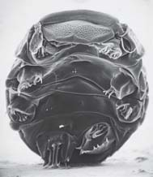
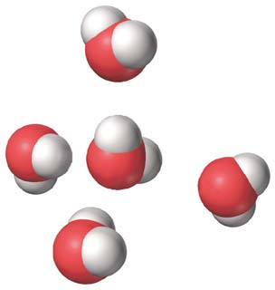

<!DOCTYPE html>
<html xmlns="http://www.w3.org/1999/xhtml" lang="es" xml:lang="es"><head>

<meta charset="utf-8">
<meta name="generator" content="quarto-1.5.53">

<meta name="viewport" content="width=device-width, initial-scale=1.0, user-scalable=yes">

<meta name="author" content="Marcelo Amores">

<title>2 Átomos y moléculas: la base química de la vida – BIOLOGÍA SOLOMON</title>
<style>
code{white-space: pre-wrap;}
span.smallcaps{font-variant: small-caps;}
div.columns{display: flex; gap: min(4vw, 1.5em);}
div.column{flex: auto; overflow-x: auto;}
div.hanging-indent{margin-left: 1.5em; text-indent: -1.5em;}
ul.task-list{list-style: none;}
ul.task-list li input[type="checkbox"] {
  width: 0.8em;
  margin: 0 0.8em 0.2em -1em; /* quarto-specific, see https://github.com/quarto-dev/quarto-cli/issues/4556 */ 
  vertical-align: middle;
}
</style>


<script src="site_libs/quarto-nav/quarto-nav.js"></script>
<script src="site_libs/quarto-nav/headroom.min.js"></script>
<script src="site_libs/clipboard/clipboard.min.js"></script>
<script src="site_libs/quarto-search/autocomplete.umd.js"></script>
<script src="site_libs/quarto-search/fuse.min.js"></script>
<script src="site_libs/quarto-search/quarto-search.js"></script>
<meta name="quarto:offset" content="./">
<link href="./03-quimica-de-la-vida.html" rel="next">
<link href="./01-una-vision-de-la-vida.html" rel="prev">
<link href="./images/Icono_E.png" rel="icon" type="image/png">
<script src="site_libs/quarto-html/quarto.js"></script>
<script src="site_libs/quarto-html/popper.min.js"></script>
<script src="site_libs/quarto-html/tippy.umd.min.js"></script>
<script src="site_libs/quarto-html/anchor.min.js"></script>
<link href="site_libs/quarto-html/tippy.css" rel="stylesheet">
<link href="site_libs/quarto-html/quarto-syntax-highlighting.css" rel="stylesheet" class="quarto-color-scheme" id="quarto-text-highlighting-styles">
<link href="site_libs/quarto-html/quarto-syntax-highlighting-dark.css" rel="prefetch" class="quarto-color-scheme quarto-color-alternate" id="quarto-text-highlighting-styles">
<script src="site_libs/bootstrap/bootstrap.min.js"></script>
<link href="site_libs/bootstrap/bootstrap-icons.css" rel="stylesheet">
<link href="site_libs/bootstrap/bootstrap.min.css" rel="stylesheet" class="quarto-color-scheme" id="quarto-bootstrap" data-mode="light">
<link href="site_libs/bootstrap/bootstrap-dark.min.css" rel="prefetch" class="quarto-color-scheme quarto-color-alternate" id="quarto-bootstrap" data-mode="dark">
<script id="quarto-search-options" type="application/json">{
  "location": "navbar",
  "copy-button": false,
  "collapse-after": 3,
  "panel-placement": "end",
  "type": "overlay",
  "limit": 50,
  "keyboard-shortcut": [
    "f",
    "/",
    "s"
  ],
  "show-item-context": false,
  "language": {
    "search-no-results-text": "Sin resultados",
    "search-matching-documents-text": "documentos encontrados",
    "search-copy-link-title": "Copiar el enlace en la búsqueda",
    "search-hide-matches-text": "Ocultar resultados adicionales",
    "search-more-match-text": "resultado adicional en este documento",
    "search-more-matches-text": "resultados adicionales en este documento",
    "search-clear-button-title": "Borrar",
    "search-text-placeholder": "",
    "search-detached-cancel-button-title": "Cancelar",
    "search-submit-button-title": "Enviar",
    "search-label": "Buscar"
  }
}</script>
<!-- Verificación de Google -->

<meta name="google-site-verification" content="EYveEP5I9oi6m-r8Qa_Fett47y3RJFqSizYYvf7G1RM">


<!-- Canonical URL dinámico -->

<link rel="canonical" link:"{{="" page.url="" |="" absolute_url="" }}"="">


  <script src="https://cdnjs.cloudflare.com/polyfill/v3/polyfill.min.js?features=es6"></script>
  <script src="https://cdn.jsdelivr.net/npm/mathjax@3/es5/tex-chtml-full.js" type="text/javascript"></script>

<script type="text/javascript">
const typesetMath = (el) => {
  if (window.MathJax) {
    // MathJax Typeset
    window.MathJax.typeset([el]);
  } else if (window.katex) {
    // KaTeX Render
    var mathElements = el.getElementsByClassName("math");
    var macros = [];
    for (var i = 0; i < mathElements.length; i++) {
      var texText = mathElements[i].firstChild;
      if (mathElements[i].tagName == "SPAN") {
        window.katex.render(texText.data, mathElements[i], {
          displayMode: mathElements[i].classList.contains('display'),
          throwOnError: false,
          macros: macros,
          fleqn: false
        });
      }
    }
  }
}
window.Quarto = {
  typesetMath
};
</script>

</head>

<body class="nav-sidebar floating nav-fixed">

<div id="quarto-search-results"></div>
  <header id="quarto-header" class="headroom fixed-top">
    <nav class="navbar navbar-expand-lg " data-bs-theme="dark">
      <div class="navbar-container container-fluid">
      <div class="navbar-brand-container mx-auto">
    <a href="./index.html" class="navbar-brand navbar-brand-logo">
    
    </a>
  </div>
            <div id="quarto-search" class="" title="Buscar"></div>
          <button class="navbar-toggler" type="button" data-bs-toggle="collapse" data-bs-target="#navbarCollapse" aria-controls="navbarCollapse" role="menu" aria-expanded="false" aria-label="Navegación de palanca" onclick="if (window.quartoToggleHeadroom) { window.quartoToggleHeadroom(); }">
  <span class="navbar-toggler-icon"></span>
</button>
          <div class="collapse navbar-collapse" id="navbarCollapse">
            <ul class="navbar-nav navbar-nav-scroll me-auto">
  <li class="nav-item">
    <a class="nav-link active" href="./index.html" aria-current="page"> 
<span class="menu-text">Inicio</span></a>
  </li>  
  <li class="nav-item">
    <a class="nav-link" href="https://envinatu.github.io/biologia/"> 
<span class="menu-text">Biología</span></a>
  </li>  
  <li class="nav-item">
    <a class="nav-link" href="https://envinatu.github.io/quimica/"> 
<span class="menu-text">Química</span></a>
  </li>  
  <li class="nav-item">
    <a class="nav-link" href="https://envinatu.github.io/geociencias"> 
<span class="menu-text">Geociencias</span></a>
  </li>  
  <li class="nav-item">
    <a class="nav-link" href="https://envinatu.github.io/pedagogia"> 
<span class="menu-text">Educación</span></a>
  </li>  
  <li class="nav-item">
    <a class="nav-link" href="https://envinatu.github.io/rubick"> 
<span class="menu-text">Ludociencia</span></a>
  </li>  
  <li class="nav-item">
    <a class="nav-link" href="https://envinatu.github.io/blog"> 
<span class="menu-text">Blog</span></a>
  </li>  
  <li class="nav-item">
    <a class="nav-link" href="https://envinatu.github.io/amores"> 
<span class="menu-text">Sobre Mi</span></a>
  </li>  
</ul>
            <ul class="navbar-nav navbar-nav-scroll ms-auto">
  <li class="nav-item compact">
    <a class="nav-link" href="https://github.com/envinatu/bio27/blob/main/docs/BIOLOGÍA-2025-2026-2027.pdf"> <i class="bi bi-filetype-pdf" role="img" aria-label="Ver PDF">
</i> 
<span class="menu-text"></span></a>
  </li>  
  <li class="nav-item compact">
    <a class="nav-link" href="https://github.com/envinatu/bio27/blob/main/docs/BIOLOGÍA-2025-2026-2027.epub"> <i class="bi bi-journal-bookmark-fill" role="img" aria-label="Ver eBook">
</i> 
<span class="menu-text"></span></a>
  </li>  
  <li class="nav-item compact">
    <a class="nav-link" href="https://www.linkedin.com/in/marceloamores/"> <i class="bi bi-linkedin" role="img" aria-label="Marcelo Amores LinkedIn">
</i> 
<span class="menu-text"></span></a>
  </li>  
  <li class="nav-item compact">
    <a class="nav-link" href="https://github.com/envinatu"> <i class="bi bi-github" role="img" aria-label="Envinatu GitHub">
</i> 
<span class="menu-text"></span></a>
  </li>  
</ul>
          </div> <!-- /navcollapse -->
            <div class="quarto-navbar-tools">
  <a href="" class="quarto-color-scheme-toggle quarto-navigation-tool  px-1" onclick="window.quartoToggleColorScheme(); return false;" title="Alternar modo oscuro"><i class="bi"></i></a>
  <a href="" class="quarto-reader-toggle quarto-navigation-tool px-1" onclick="window.quartoToggleReader(); return false;" title="Alternar modo lector">
  <div class="quarto-reader-toggle-btn">
  <i class="bi"></i>
  </div>
</a>
</div>
      </div> <!-- /container-fluid -->
    </nav>
  <nav class="quarto-secondary-nav">
    <div class="container-fluid d-flex">
      <button type="button" class="quarto-btn-toggle btn" data-bs-toggle="collapse" role="button" data-bs-target=".quarto-sidebar-collapse-item" aria-controls="quarto-sidebar" aria-expanded="false" aria-label="Alternar barra lateral" onclick="if (window.quartoToggleHeadroom) { window.quartoToggleHeadroom(); }">
        <i class="bi bi-layout-text-sidebar-reverse"></i>
      </button>
        <nav class="quarto-page-breadcrumbs" aria-label="breadcrumb"><ol class="breadcrumb"><li class="breadcrumb-item"><a href="./02-atomos-y-moleculas.html"><span class="chapter-title">2 Átomos y moléculas: la base química de la vida</span></a></li></ol></nav>
        <a class="flex-grow-1" role="navigation" data-bs-toggle="collapse" data-bs-target=".quarto-sidebar-collapse-item" aria-controls="quarto-sidebar" aria-expanded="false" aria-label="Alternar barra lateral" onclick="if (window.quartoToggleHeadroom) { window.quartoToggleHeadroom(); }">      
        </a>
    </div>
  </nav>
</header>
<!-- content -->
<div id="quarto-content" class="quarto-container page-columns page-rows-contents page-layout-article page-navbar">
<!-- sidebar -->
  <nav id="quarto-sidebar" class="sidebar collapse collapse-horizontal quarto-sidebar-collapse-item sidebar-navigation floating overflow-auto">
    <div class="sidebar-menu-container"> 
    <ul class="list-unstyled mt-1">
        <li class="sidebar-item">
  <div class="sidebar-item-container"> 
  <a href="./index.html" class="sidebar-item-text sidebar-link">
 <span class="menu-text">Presentación</span></a>
  </div>
</li>
        <li class="sidebar-item">
  <div class="sidebar-item-container"> 
  <a href="./000-prefacio.html" class="sidebar-item-text sidebar-link">
 <span class="menu-text">Prefacio</span></a>
  </div>
</li>
        <li class="sidebar-item">
  <div class="sidebar-item-container"> 
  <a href="./001-al-estudiante.html" class="sidebar-item-text sidebar-link">
 <span class="menu-text">Al estudiante</span></a>
  </div>
</li>
        <li class="sidebar-item">
  <div class="sidebar-item-container"> 
  <a href="./01-una-vision-de-la-vida.html" class="sidebar-item-text sidebar-link"><span class="chapter-title">1 Una visión de la vida</span></a>
  </div>
</li>
        <li class="sidebar-item">
  <div class="sidebar-item-container"> 
  <a href="./02-atomos-y-moleculas.html" class="sidebar-item-text sidebar-link active"><span class="chapter-title">2 Átomos y moléculas: la base química de la vida</span></a>
  </div>
</li>
        <li class="sidebar-item">
  <div class="sidebar-item-container"> 
  <a href="./03-quimica-de-la-vida.html" class="sidebar-item-text sidebar-link"><span class="chapter-title">3 La química de la vida: Compuestos orgánicos</span></a>
  </div>
</li>
        <li class="sidebar-item">
  <div class="sidebar-item-container"> 
  <a href="./04-organizacion-de-la-celula.html" class="sidebar-item-text sidebar-link"><span class="chapter-title">4 Organización de la célula</span></a>
  </div>
</li>
        <li class="sidebar-item">
  <div class="sidebar-item-container"> 
  <a href="./05-membranas-biologicas.html" class="sidebar-item-text sidebar-link"><span class="chapter-title">5 Membranas biológicas</span></a>
  </div>
</li>
        <li class="sidebar-item">
  <div class="sidebar-item-container"> 
  <a href="./06-comunicacion-celular.html" class="sidebar-item-text sidebar-link"><span class="chapter-title">6 Comunicación celular</span></a>
  </div>
</li>
        <li class="sidebar-item">
  <div class="sidebar-item-container"> 
  <a href="./07-energia-y-metabolismo.html" class="sidebar-item-text sidebar-link"><span class="chapter-title">7 Energía y metabolismo</span></a>
  </div>
</li>
        <li class="sidebar-item">
  <div class="sidebar-item-container"> 
  <a href="./08-produccion-de-atp.html" class="sidebar-item-text sidebar-link"><span class="chapter-title">8 ¿Cómo producen ATP las células? Rutas de liberación de energía</span></a>
  </div>
</li>
        <li class="sidebar-item">
  <div class="sidebar-item-container"> 
  <a href="./09-fotosintesis.html" class="sidebar-item-text sidebar-link"><span class="chapter-title">9 Fotosíntesis: captura de energía luminosa</span></a>
  </div>
</li>
        <li class="sidebar-item">
  <div class="sidebar-item-container"> 
  <a href="./10-mitosis-y-meiosis.html" class="sidebar-item-text sidebar-link"><span class="chapter-title">10 Cromosomas, mitosis y meiosis</span></a>
  </div>
</li>
        <li class="sidebar-item">
  <div class="sidebar-item-container"> 
  <a href="./11-herencia.html" class="sidebar-item-text sidebar-link"><span class="chapter-title">11 Los principios básicos de la herencia</span></a>
  </div>
</li>
        <li class="sidebar-item">
  <div class="sidebar-item-container"> 
  <a href="./12-adn.html" class="sidebar-item-text sidebar-link"><span class="chapter-title">12 ADN: Molécula portadora de la información genética</span></a>
  </div>
</li>
        <li class="sidebar-item">
  <div class="sidebar-item-container"> 
  <a href="./13-expresion-genica.html" class="sidebar-item-text sidebar-link"><span class="chapter-title">13 Expresión génica</span></a>
  </div>
</li>
        <li class="sidebar-item">
  <div class="sidebar-item-container"> 
  <a href="./14-regulacion-genica.html" class="sidebar-item-text sidebar-link"><span class="chapter-title">14 Regulación génica</span></a>
  </div>
</li>
        <li class="sidebar-item">
  <div class="sidebar-item-container"> 
  <a href="./15-tecnologia-adn.html" class="sidebar-item-text sidebar-link"><span class="chapter-title">15 Tecnología ADN y genómica</span></a>
  </div>
</li>
        <li class="sidebar-item">
  <div class="sidebar-item-container"> 
  <a href="./16-genetica-humana.html" class="sidebar-item-text sidebar-link"><span class="chapter-title">16 Genética humana y el genoma humano</span></a>
  </div>
</li>
        <li class="sidebar-item">
  <div class="sidebar-item-container"> 
  <a href="./17-genetica-del-desarrollo.html" class="sidebar-item-text sidebar-link"><span class="chapter-title">17 Genética del desarrollo</span></a>
  </div>
</li>
        <li class="sidebar-item">
  <div class="sidebar-item-container"> 
  <a href="./18-evolucion-darwiniana.html" class="sidebar-item-text sidebar-link"><span class="chapter-title">18 Introducción a la evolución darwiniana</span></a>
  </div>
</li>
        <li class="sidebar-item">
  <div class="sidebar-item-container"> 
  <a href="./19-cambio-en-poblaciones.html" class="sidebar-item-text sidebar-link"><span class="chapter-title">19 Cambio evolutivo en poblaciones</span></a>
  </div>
</li>
        <li class="sidebar-item">
  <div class="sidebar-item-container"> 
  <a href="./20-especiacion.html" class="sidebar-item-text sidebar-link"><span class="chapter-title">20 Especiación y macroevolución</span></a>
  </div>
</li>
        <li class="sidebar-item">
  <div class="sidebar-item-container"> 
  <a href="./21-historia-evolutiva.html" class="sidebar-item-text sidebar-link"><span class="chapter-title">21 El origen e historia evolutiva de la vida</span></a>
  </div>
</li>
        <li class="sidebar-item">
  <div class="sidebar-item-container"> 
  <a href="./22-evolucion-de-primates.html" class="sidebar-item-text sidebar-link"><span class="chapter-title">22 La evolución de los primates</span></a>
  </div>
</li>
        <li class="sidebar-item">
  <div class="sidebar-item-container"> 
  <a href="./23-sistematica.html" class="sidebar-item-text sidebar-link"><span class="chapter-title">23 Comprensión de la diversidad: sistemática</span></a>
  </div>
</li>
        <li class="sidebar-item">
  <div class="sidebar-item-container"> 
  <a href="./24-virus.html" class="sidebar-item-text sidebar-link"><span class="chapter-title">24 Virus y agentes subvirales</span></a>
  </div>
</li>
        <li class="sidebar-item">
  <div class="sidebar-item-container"> 
  <a href="./25-bacterias-y-arqueas.html" class="sidebar-item-text sidebar-link"><span class="chapter-title">25 Bacterias y arqueas</span></a>
  </div>
</li>
        <li class="sidebar-item">
  <div class="sidebar-item-container"> 
  <a href="./26-protistas.html" class="sidebar-item-text sidebar-link"><span class="chapter-title">26 Protistas</span></a>
  </div>
</li>
        <li class="sidebar-item">
  <div class="sidebar-item-container"> 
  <a href="./27-plantas-sin-semillas.html" class="sidebar-item-text sidebar-link"><span class="chapter-title">27 Plantas sin semillas</span></a>
  </div>
</li>
        <li class="sidebar-item">
  <div class="sidebar-item-container"> 
  <a href="./28-plantas-con-semillas.html" class="sidebar-item-text sidebar-link"><span class="chapter-title">E</span></a>
  </div>
</li>
        <li class="sidebar-item">
  <div class="sidebar-item-container"> 
  <a href="./29-hongos.html" class="sidebar-item-text sidebar-link"><span class="chapter-title">29 Los hongos</span></a>
  </div>
</li>
        <li class="sidebar-item">
  <div class="sidebar-item-container"> 
  <a href="./30-diversidad-animal.html" class="sidebar-item-text sidebar-link"><span class="chapter-title">30 Introducción a la diversidad animal</span></a>
  </div>
</li>
        <li class="sidebar-item">
  <div class="sidebar-item-container"> 
  <a href="./31-protostomos.html" class="sidebar-item-text sidebar-link"><span class="chapter-title">31 Esponjas, cnidarios, ctenóforos y protóstomos</span></a>
  </div>
</li>
        <li class="sidebar-item">
  <div class="sidebar-item-container"> 
  <a href="./32-deuterostomos.html" class="sidebar-item-text sidebar-link"><span class="chapter-title">32 Los deuteróstomos</span></a>
  </div>
</li>
        <li class="sidebar-item">
  <div class="sidebar-item-container"> 
  <a href="./33-crecimiento-vegetal.html" class="sidebar-item-text sidebar-link"><span class="chapter-title">33 Estructura, crecimiento y desarrollo vegetal</span></a>
  </div>
</li>
        <li class="sidebar-item">
  <div class="sidebar-item-container"> 
  <a href="./34-hoja.html" class="sidebar-item-text sidebar-link"><span class="chapter-title">L</span></a>
  </div>
</li>
        <li class="sidebar-item">
  <div class="sidebar-item-container"> 
  <a href="./35-tallo.html" class="sidebar-item-text sidebar-link"><span class="chapter-title">35 Estructura y transporte en el tallo</span></a>
  </div>
</li>
        <li class="sidebar-item">
  <div class="sidebar-item-container"> 
  <a href="./36-raices.html" class="sidebar-item-text sidebar-link"><span class="chapter-title">36 Raíces y nutrición mineral</span></a>
  </div>
</li>
        <li class="sidebar-item">
  <div class="sidebar-item-container"> 
  <a href="./37-reproduccion-plantas.html" class="sidebar-item-text sidebar-link"><span class="chapter-title">37 Reproducción en plantas con fl ores</span></a>
  </div>
</li>
        <li class="sidebar-item">
  <div class="sidebar-item-container"> 
  <a href="./38-respuestas-plantas.html" class="sidebar-item-text sidebar-link"><span class="chapter-title">38 Respuestas de desarrollo en plantas a señales externas e internas</span></a>
  </div>
</li>
        <li class="sidebar-item">
  <div class="sidebar-item-container"> 
  <a href="./39-introduccion-fisiologia-animal.html" class="sidebar-item-text sidebar-link"><span class="chapter-title">39 Estructura y función animal. Una introducción</span></a>
  </div>
</li>
        <li class="sidebar-item">
  <div class="sidebar-item-container"> 
  <a href="./40-proteccion-y-movimiento.html" class="sidebar-item-text sidebar-link"><span class="chapter-title">40 Protección, sostén y movimiento</span></a>
  </div>
</li>
        <li class="sidebar-item">
  <div class="sidebar-item-container"> 
  <a href="./41-senalizacion-neuronal.html" class="sidebar-item-text sidebar-link"><span class="chapter-title">41 Señalización neuronal</span></a>
  </div>
</li>
        <li class="sidebar-item">
  <div class="sidebar-item-container"> 
  <a href="./42-regulacion-neuronal.html" class="sidebar-item-text sidebar-link"><span class="chapter-title">42 Regulación neuronal</span></a>
  </div>
</li>
        <li class="sidebar-item">
  <div class="sidebar-item-container"> 
  <a href="./43-sentidos.html" class="sidebar-item-text sidebar-link"><span class="chapter-title">43 Sistemas sensoriales</span></a>
  </div>
</li>
        <li class="sidebar-item">
  <div class="sidebar-item-container"> 
  <a href="./44-transporte-interno.html" class="sidebar-item-text sidebar-link"><span class="chapter-title">44 Transporte interno</span></a>
  </div>
</li>
        <li class="sidebar-item">
  <div class="sidebar-item-container"> 
  <a href="./45-sistema-inmunologico.html" class="sidebar-item-text sidebar-link"><span class="chapter-title">45 El sistema inmunológico: Defensa interna</span></a>
  </div>
</li>
        <li class="sidebar-item">
  <div class="sidebar-item-container"> 
  <a href="./46-intercambio-gases.html" class="sidebar-item-text sidebar-link"><span class="chapter-title">46 Intercambio de gases</span></a>
  </div>
</li>
        <li class="sidebar-item">
  <div class="sidebar-item-container"> 
  <a href="./47-nutricion.html" class="sidebar-item-text sidebar-link"><span class="chapter-title">47 Procesamiento de alimentos y nutrición</span></a>
  </div>
</li>
        <li class="sidebar-item">
  <div class="sidebar-item-container"> 
  <a href="./48-osmorregulacion.html" class="sidebar-item-text sidebar-link"><span class="chapter-title">48 Osmorregulación y desecho de residuos metabólicos</span></a>
  </div>
</li>
        <li class="sidebar-item">
  <div class="sidebar-item-container"> 
  <a href="./49-regulacion-endocrina.html" class="sidebar-item-text sidebar-link"><span class="chapter-title">49 Regulación endocrina</span></a>
  </div>
</li>
        <li class="sidebar-item">
  <div class="sidebar-item-container"> 
  <a href="./50-reproduccion-animal.html" class="sidebar-item-text sidebar-link"><span class="chapter-title">50 Reproducción</span></a>
  </div>
</li>
        <li class="sidebar-item">
  <div class="sidebar-item-container"> 
  <a href="./51-desarrollo-animal.html" class="sidebar-item-text sidebar-link"><span class="chapter-title">51 Desarrollo animal</span></a>
  </div>
</li>
        <li class="sidebar-item">
  <div class="sidebar-item-container"> 
  <a href="./52-comportamiento-animal.html" class="sidebar-item-text sidebar-link"><span class="chapter-title">52 Comportamiento animal</span></a>
  </div>
</li>
        <li class="sidebar-item">
  <div class="sidebar-item-container"> 
  <a href="./53-ecologia-de-poblaciones.html" class="sidebar-item-text sidebar-link"><span class="chapter-title">52.6 SELECCIÓN SEXUAL</span></a>
  </div>
</li>
        <li class="sidebar-item">
  <div class="sidebar-item-container"> 
  <a href="./54-ecologia-de-comunidades.html" class="sidebar-item-text sidebar-link"><span class="chapter-title">54 Ecología de comunidades</span></a>
  </div>
</li>
        <li class="sidebar-item">
  <div class="sidebar-item-container"> 
  <a href="./55-ecosistemas.html" class="sidebar-item-text sidebar-link"><span class="chapter-title">55 Ecosistemas y la biosfera</span></a>
  </div>
</li>
        <li class="sidebar-item">
  <div class="sidebar-item-container"> 
  <a href="./56-geografia-de-la-vida.html" class="sidebar-item-text sidebar-link"><span class="chapter-title">56 Ecología y geografía de la vida</span></a>
  </div>
</li>
        <li class="sidebar-item">
  <div class="sidebar-item-container"> 
  <a href="./57-conservacion.html" class="sidebar-item-text sidebar-link"><span class="chapter-title">57 Diversidad biológica y biología de la conservación</span></a>
  </div>
</li>
    </ul>
    </div>
</nav>
<div id="quarto-sidebar-glass" class="quarto-sidebar-collapse-item" data-bs-toggle="collapse" data-bs-target=".quarto-sidebar-collapse-item"></div>
<!-- margin-sidebar -->
    <div id="quarto-margin-sidebar" class="sidebar margin-sidebar">
        <nav id="TOC" role="doc-toc" class="toc-active">
    <h2 id="toc-title">Tabla de contenidos</h2>
   
  <ul>
  <li><a href="#e" id="toc-e" class="nav-link active" data-scroll-target="#e">E</a>
  <ul class="collapse">
  <li><a href="#elementos-y-átomos" id="toc-elementos-y-átomos" class="nav-link" data-scroll-target="#elementos-y-átomos">2.1 ELEMENTOS Y ÁTOMOS</a></li>
  <li><a href="#reacciones-químicas" id="toc-reacciones-químicas" class="nav-link" data-scroll-target="#reacciones-químicas">2.2 REACCIONES QUÍMICAS</a></li>
  <li><a href="#enlaces-químicos" id="toc-enlaces-químicos" class="nav-link" data-scroll-target="#enlaces-químicos">2.3 ENLACES QUÍMICOS</a></li>
  <li><a href="#reacciones-redox" id="toc-reacciones-redox" class="nav-link" data-scroll-target="#reacciones-redox">2.4 REACCIONES REDOX</a></li>
  <li><a href="#agua" id="toc-agua" class="nav-link" data-scroll-target="#agua">2.5 AGUA</a></li>
  <li><a href="#ácidos-bases-y-sales" id="toc-ácidos-bases-y-sales" class="nav-link" data-scroll-target="#ácidos-bases-y-sales">2.6 ÁCIDOS, BASES Y SALES</a></li>
  <li><a href="#resumen-enfoque-en-los-objetivos-de-aprendizaje" id="toc-resumen-enfoque-en-los-objetivos-de-aprendizaje" class="nav-link" data-scroll-target="#resumen-enfoque-en-los-objetivos-de-aprendizaje">■ ■ RESUMEN: ENFOQUE EN LOS OBJETIVOS DE APRENDIZAJE</a></li>
  </ul></li>
  </ul>
</nav>
    </div>
<!-- main -->
<main class="content" id="quarto-document-content">

<header id="title-block-header" class="quarto-title-block default">
<div class="quarto-title">
<h1 class="title"><span class="chapter-title">2 Átomos y moléculas: la base química de la vida</span></h1>
</div>


<div class="quarto-title-meta">

    
    <div>
    <div class="quarto-title-meta-heading">Fecha de publicación</div>
    <div class="quarto-title-meta-contents">
      <p class="date">septiembre, 2025</p>
    </div>
  </div>
  
    
  </div>
  


</header>


<p>26</p>
<p>El agua es un requerimiento básico para todo tipo de vida. Un jaguar ( Panthera onca ), el felino más grande en el hemisferio occidental, hace una pausa para beber agua en un arroyo de la selva.</p>
<p>Frans Lanting/Minden Pictures</p>
<p>CONCEPTOS CLAVE</p>
<p>2.1 Carbono, hidrógeno, oxígeno y nitrógeno son los elementos más abundantes en los seres vivos. 2.2 Las propiedades químicas de un átomo se determinan por sus electrones de más alta energía, conocidos como electrones de valencia. 2.3 Una molécula consta de átomos unidos entre sí por enlaces covalentes. Otros enlaces químicos importantes y muy fuertes son los enlaces iónicos. Los enlaces de hidrógeno y las interacciones de van der Waals son atracciones más débiles. 2.4 La energía de un electrón se transfi ere en una reacción redox. 2.5 Las moléculas de agua son polares, tienen regiones de carga parcial positiva y otras de carga parcial negativa lo que les permite formar enlaces de hidrógeno entre sí y con otras sustancias polares. 2.6 Los ácidos son donadores de iones hidrógeno, las bases son aceptores de iones hidrógeno. La escala de pH es una medida conveniente de la concentración de iones hidrógeno de una disolución.</p>
<section id="e" class="level1">
<h1>E</h1>
<p>l conocimiento de la química es esencial para comprender a los organismos y cómo funcionan. Este jaguar y las plantas de la selva tropical, así como abundantes insectos y microorganismos que no se ven, comparten similitudes fundamentales en su composición química y en sus procesos metabólicos básicos. Estas similitudes químicas proporcionan una fuerte evidencia de la evolución de todos los organismos a partir de un ancestro común y explican en gran parte por qué lo que los biólogos aprenden estudiando a las bacterias o a las ratas en laboratorios se puede aplicar a otros organismos, incluyendo a los seres humanos. Por otra parte, los principios químicos y físicos básicos que rigen los organismos no son exclusivos de los seres vivos, porque también se aplican a los sistemas inertes. El éxito del Proyecto del Genoma Humano y los estudios relacionados se basan en gran medida en la bioquímica y en la biología molecular , la química y la física de las moléculas que constituyen los seres vivos. Un bioquímico puede investigar las interacciones precisas entre los átomos y las moléculas de una célula que mantienen el fl ujo de energía esencial para la vida, y un biólogo molecular puede estudiar cómo interactúan las proteínas con el ácido desoxirribonucleico (ADN) con el fi n de controlar la expresión de ciertos genes. Sin embargo, es esencial que todos los biólogos entiendan la química. Un biólogo evolutivo puede estudiar las relaciones</p>
<div class="quarto-figure quarto-figure-center">
<figure class="figure">
<p></p>
<figcaption>02-atomos-y-moleculas_p60_img1.jpeg</figcaption>
</figure>
</div>
<p>Átomos y moléculas: la base química de la vida 27</p>
<p>evolutivas al comparar el ADN de diferentes tipos de organismos. Un ecólogo puede estudiar cómo fl uye la energía entre los organismos que viven en un estuario o monitorear los efectos biológicos del cambio de salinidad del agua. Un botánico puede estudiar compuestos únicos producidos por las plantas e incluso puede llegar a ser un “explorador químico”, buscando nuevas fuentes de agentes medicinales. En este capítulo, se establecen las bases para comprender cómo la estructura de los átomos determina la forma en que se forman los enlaces químicos para producir compuestos complejos. La mayor parte de nuestro análisis se centra en sustancias simples y pequeñas conocidas como compuestos inorgánicos . Entre los grupos de compuestos biológicamente importantes de compuestos inorgánicos están el agua, muchos ácidos, bases y sales simples. Se presta especial atención al agua, la sustancia más abundante en los organismos y en la superfi cie de la Tierra, y se analiza cómo sus propiedades únicas afectan a los organismos vivos, así como a su entorno inerte. En el capítulo 3 se extiende el análisis a los compuestos orgánicos , que contienen carbono, son generalmente grandes y complejos. En todos los compuestos orgánicos hasta en los más simples, dos o más átomos de carbono están unidos entre sí formando la estructura, o esqueleto de la molécula.</p>
<section id="elementos-y-átomos" class="level2">
<h2 class="anchored" data-anchor-id="elementos-y-átomos">2.1 ELEMENTOS Y ÁTOMOS</h2>
<p>OBJETIVOS DE APRENDIZAJE</p>
<p>1 Mencionar los principales elementos químicos presentes en los seres vivos y proporcionar una función importante de cada uno. 2 Comparar las propiedades físicas (masa y carga) y la ubicación de los electrones, protones y neutrones. Distinguir entre el número atómico y el número de masa de un átomo. 3 Defi nir los términos orbital y capa electrónica . Relacionar las capas electrónicas con los niveles de energía principales.</p>
<p>Los elementos son sustancias que no se pueden dividir en sustancias más simples por medio de reacciones químicas ordinarias. Cada elemen to tiene un símbolo químico : en general la primera letra o las primera y segunda letras del nombre del elemento en inglés o en latín. Por ejemplo, O es el símbolo del oxígeno, C del carbono, H del hidrógeno, N del nitrógeno, y Na del sodio (de la palabra en latín natrium ). Sólo cuatro elementos, oxígeno, carbono, hidrógeno y nitrógeno, son responsables de más del 96% de la masa de la mayoría de los organismos. Otros, tales como calcio, fósforo, potasio y magnesio, están también constantemente presentes, pero en cantidades más pequeñas. Algunos elementos, como el yodo y cobre, se conocen como oligoelementos , ya que sólo son necesarios en cantidades muy pequeñas. En la TABLA 2-1 se enumeran los elementos que componen los organismos y se explica brevemente su función principal en plantas y animales. Un átomo se defi ne como la parte más pequeña de un elemento que conserva sus propiedades químicas. Los átomos son demasiado pequeños para ser visibles bajo el microscopio óptico. Sin embargo, con técnicas sofi sticadas (como la microscopia de efecto túnel, se hacen amplifi caciones tan grandes como 5 millones de veces) los investigadores han podido fotografi ar las posiciones de algunos átomos en las moléculas grandes. Los componentes de los átomos son pequeñas partículas de materia (todo lo que tiene masa y ocupa espacio), conocidas como partículas subatómicas. Los físicos han descubierto una serie de partículas subatómicas, pero para nuestros propósitos necesitamos considerar sólo tres: electrones, protones y neutrones. Un electrón es una partícula que porta</p>
<p>una unidad de carga eléctrica negativa; un protón porta una unidad de carga positiva, y un neutrón es una partícula sin carga. En un átomo eléctricamente neutro, el número de electrones es igual al número de protones. Los protones y los neutrones agrupados conforman el núcleo atómico . Sin embargo, los electrones no tienen una ubicación fi ja y se mueven rápidamente a través del espacio casi vacío que rodea el núcleo atómico.</p>
<p>Un átomo se identifi ca únicamente por su número de protones</p>
<p>Cada elemento tiene un número fi jo de protones en el núcleo atómico, conocido como el número atómico . Se escribe como un subíndice a la izquierda del símbolo químico. Así, 1 H indica que el núcleo del hidrógeno contiene 1 protón, y 8 O signifi ca que el núcleo del oxígeno con-</p>
<p>Funciones de los elementos en los organismos</p>
<p>Elemento* (símbolo químico) Funciones</p>
<p>O Oxígeno Necesario para la respiración celular; presente en la mayoría de los compuestos orgánicos; componente del agua</p>
<p>C Carbono Forma la estructura de las moléculas orgánicas; cada átomo de carbono puede formar cuatro enlaces con otros átomos</p>
<p>H Hidrógeno Presente en la mayoría de los compuestos orgánicos; componente del agua; el ion hidrógeno (H + ) está implicado en algunas reacciones de transferencia de energía</p>
<p>N Nitrógeno Componente de proteínas y ácidos nucleicos; componente de la clorofi la en las plantas</p>
<p>Ca Ca Calcio Componente estructural de los huesos y los dientes; el ion calcio (Ca 2 + ) es importante en la contracción muscular, la conducción de impulsos nerviosos y la coagulación sanguínea; asociado con la pared celular de las plantas</p>
<p>P Fósforo Componente de los ácidos nucleicos y de los fosfolípidos de las membranas; importante en las reacciones de transferencia de energía; componente estructural de los huesos</p>
<p>K Potasio El ion potasio (K + ) es el principal ion positivo (catión) en el citoplasma (tejido) de las células animales; importante en la función nerviosa; afecta la contracción muscular; controla la apertura de los estomas en las plantas</p>
<p>S Azufre Componente de la mayoría de las proteínas</p>
<p>Na Na Sodio El ion sodio (Na + ) es el principal ion positivo (catión) en el líquido intersticial (tejido) de animales; importante en el equilibrio de líquidos; esencial para la conducción de impulsos nerviosos; importante en la fotosíntesis en las plantas</p>
<p>Mg Mg Magnesio Necesario en la sangre y otros tejidos animales; activa muchas enzimas; componente de la clorofi la en las plantas</p>
<p>Cl Cl Cloro El ion cloruro (Cl − ) es el principal ion negativo (anión) en el líquido intersticial (tejido) de animales; importante en el balance de agua; esencial para la fotosíntesis</p>
<p>Fe Fe Hierro Componente de la hemoglobina en los animales; activa ciertas enzimas</p>
<p>*Otros elementos se encuentran en muy pequeñas cantidades (trazas) en animales, plantas, o en ambos incluidos yodo (I), manganeso (Mn), cobre (Cu), zinc (Zn), cobalto (Co), fl úor (F), molibdeno (Mo), selenio (Se), boro (B), silicio (Si) y algunos otros.</p>
<p>TABLA 2-1</p>
<p>28 Capítulo 2</p>
<p>La suma de protones y neutrones determina la masa atómica</p>
<p>La masa de una partícula subatómica es muy pequeña, demasiado pequeña para que pueda expresarse convenientemente en gramos o incluso en microgramos. 1 Estas masas se expresan en términos de la unidad de masa atómica ( uma ), también llamada dalton en honor a John Dalton, el químico inglés que formuló una teoría atómica a principios de 1800. Una uma es aproximadamente igual a la masa de un solo</p>
<p>tiene 8 protones. El número atómico determina la identidad del átomo y defi ne el elemento correspondiente. La tabla periódica es una gráfi ca de los elementos ordenada por su número atómico ( FIGURA 2.1 y apéndice A). La tabla periódica es útil porque permite correlacionar simultáneamente muchas de las características entre los diversos elementos. La fi gura 2-1 incluye la confi guración electrónica de varios elementos importantes para los organismos, con base en los modelos de Bohr , que muestran el arreglo de los electrones en varios círculos concéntricos alrededor del núcleo; éstos aunque son fáciles de utilizar, son imprecisos. En realidad, el espacio que rodea el núcleo es extremadamente grande en comparación con él, y como se verá, los electrones no orbitan alrededor del núcleo en trayectorias concéntricas fi jas.</p>
<p>1 Las tablas de unidades de mediciones científi cas comúnmente utilizadas están impresas en las últimas páginas de este libro.</p>
<p>La tabla periódica proporciona información acerca de los elementos: su composición, estructura y comportamiento químico.</p>
<ol start="12" type="A">
<li></li>
<li></li>
</ol>
<p>H</p>
<p>Li</p>
<p>Na</p>
<p>K</p>
<p>Rb</p>
<p>Cs</p>
<p>Fr</p>
<p>Be</p>
<p>Mg</p>
<p>Ca</p>
<p>Sr</p>
<p>Ba</p>
<p>Ra</p>
<p>Sc</p>
<ol start="12" type="A">
<li></li>
<li></li>
</ol>
<p>Ti</p>
<p>Zr</p>
<p>V</p>
<p>Nb</p>
<p>Ta</p>
<p>Cr</p>
<p>Mo</p>
<p>W</p>
<p>Mn</p>
<p>Tc</p>
<p>Re</p>
<p>Fe</p>
<p>Ru</p>
<p>Os</p>
<p>Co</p>
<p>Rh</p>
<p>Ir</p>
<p>Ni</p>
<p>Pd</p>
<p>Pt</p>
<p>Cu</p>
<p>Ag</p>
<p>Zn</p>
<p>Cd</p>
<p>Ga</p>
<p>In</p>
<p>Ge As</p>
<p>Sb</p>
<p>Bi</p>
<p>Se</p>
<p>Te</p>
<p>Po</p>
<p>Br Kr</p>
<p>Xe</p>
<p>Rn</p>
<p>C</p>
<p>Si</p>
<p>O</p>
<p>S</p>
<p>Ne</p>
<p>Ar Al</p>
<p>N</p>
<p>P</p>
<p>F</p>
<p>Cl</p>
<p>La</p>
<p>Ac</p>
<p>C</p>
<p>T</p>
<p>Sm</p>
<p>Pu</p>
<p>Eu</p>
<p>Am</p>
<p>Gd</p>
<p>Cm Bk Cf Es Fm</p>
<p>Tm</p>
<p>Md</p>
<p>Y</p>
<p>N</p>
<p>H 1</p>
<p>HIDRÓGENO</p>
<p>1</p>
<p>MASA ATÓMICA 1.01 uma</p>
<p>K 19</p>
<p>POTASIO</p>
<p>2 • 8 • 8 • 1</p>
<p>MASA ATÓMICA 39.10 uma</p>
<p>Ca 20</p>
<p>CALCIO</p>
<p>2 • 8 • 8 • 2</p>
<p>MASA ATÓMICA 40.08 uma</p>
<p>S 16</p>
<p>AZUFRE</p>
<p>2 • 8 • 6</p>
<p>MASA ATÓMICA 32.07 uma</p>
<p>O 8</p>
<p>OXÍGENO</p>
<p>2 • 6</p>
<p>MASA ATÓMICA 16.00 uma C 6</p>
<p>CARBONO</p>
<p>2 • 4</p>
<p>MASA ATÓMICA 12.01 uma</p>
<p>N 7</p>
<p>NITRÓGENO</p>
<p>2 • 5</p>
<p>Mg 12</p>
<p>MAGNESIO</p>
<p>2 • 8 • 2</p>
<p>MASA ATÓMICA 24.31 uma</p>
<p>Cl 17</p>
<p>CLORO</p>
<p>2 • 8 • 7</p>
<p>MASA ATÓMICA 35.45 uma</p>
<p>Ne 10</p>
<p>NEÓN</p>
<p>2 • 8</p>
<p>MASA ATÓMICA 20.18 uma</p>
<p>P 15</p>
<p>FÓSFORO</p>
<p>2 • 8 • 5</p>
<p>MASA ATÓMICA 30.97 uma</p>
<p>Na 11</p>
<p>SODIO</p>
<p>2 • 8 • 1</p>
<p>MASA ATÓMICA 22.99 uma</p>
<p>Número de e – en cada nivel de energía He</p>
<p>B</p>
<p>At</p>
<p>Sn</p>
<p>Hf</p>
<p>Y</p>
<p>MASA ATÓMICA 14.01 uma</p>
<p>I</p>
<p>Número atómico</p>
<p>Nombre químico</p>
<p>Símbolo químico</p>
<p>FIGURA 2-1 La tabla periódica Observe el uso de los modelos de Bohr para representar la confi guración electrónica de los átomos de algunos elementos de importancia biológica, además del neón, que no es reactivo, ya que su capa de valencia está completa (lo que se analizará posteriormente en este capítulo).</p>
<p>Aunque el modelo de Bohr no representa las confi guraciones electrónicas con precisión, se utiliza comúnmente debido a su simplicidad y conveniencia. En el apéndice A se presenta una tabla periódica completa.</p>
<p>PUNTO CLAVE</p>
<p>Átomos y moléculas: la base química de la vida 29</p>
<p>micas, por tanto son esencialmente intercambiables en las moléculas. Por lo general las moléculas que contienen radioisótopos se metabolizan y(o) se localizan en el organismo de manera similar a la de sus correspondientes no radiactivos, y se pueden sustituir. Por esta razón, los radioisótopos tales como 3 H (tritio), 14 C y 32 P son herramientas de gran valor que se utilizan en la investigación, por ejemplo, para datar fósiles (vea la fi gura 18-10), rastrear rutas bioquímicas, determinar la secuencia de la información genética en el ADN (vea la fi gura 15-10), y entender el transporte de azúcar en las plantas. En medicina, los radioisótopos se utilizan tanto en el diagnósti co como en el tratamiento. La localización y/o el metabolismo de una sustancia tal como una hormona o un fármaco se pueden rastrear en el cuerpo marcando la sustancia con un radioisótopo tal como el carbono-14 o el tritio. Los radioisótopos se utilizan para examinar el funcionamiento de la glándula tiroides, para proporcionar imágenes del</p>
<p>protón o de un solo neutrón. Los protones y los neutrones conforman casi toda la masa de un átomo. La masa de un electrón es tan sólo 1/1800 de la masa de un protón o de un neutrón. La masa atómica de un átomo es un número que indica aproximadamente cuánta materia contiene en comparación con otro átomo. Este valor se determina sumando el número de protones al número de neutrones y expresando los resultados en unidades de masa atómica o daltons. 2 La masa de los electrones se desprecia porque es muy pequeña. El número de masa atómica se indica con un superíndice a la izquierda del símbolo químico. La forma común del átomo de oxígeno, con 8 protones y 8 neutrones en su núcleo, tiene un número atómico de 8 y una masa de 16 uma. Esto se indica con el símbolo 16 8 C. Las características de los protones, electrones y neutrones se resumen en la siguiente tabla:</p>
<p>Masa Partícula Carga aproximada Ubicación</p>
<p>Protón Positiva 1 uma Núcleo</p>
<p>Neutrón Neutra 1 uma Núcleo</p>
<p>Electrón Negativa Aproximadamente Fuera del núcleo 1/1800 uma</p>
<p>Los isótopos de un elemento difi eren en el número de neutrones</p>
<p>La mayoría de los elementos consisten de una mezcla de átomos con diferente número de neutrones y por lo tanto de masas diferentes. Estos átomos se llaman isótopos . Los isótopos de un mismo elemento tienen el mismo número de protones y electrones, sólo varía el número de neutrones. Los tres isótopos de hidrógeno, 1 1 H (hidrógeno común), 2 1 H (deuterio), y 3 1 H (tritio), contienen 0, 1 y 2 neutrones, respectivamente. La FIGURA 2-2 muestra los modelos de Bohr de dos isótopos de carbono, 12 6 C y 14 6 C. La masa de un elemento se expresa como el promedio de las masas de sus isótopos (ponderados por su abundancia relativa en la naturaleza). Por ejemplo, la masa atómica del hidrógeno no es 1.0 uma, sino 1.0079 uma, lo que refl eja la presencia natural de pequeñas cantidades de deuterio y tritio, además de la mayor abundancia del hidrógeno común. Debido a que tienen el mismo número de electrones, todos los isótopos de un elemento dado tienen esencialmente las mismas características químicas. Sin embargo, algunos isótopos son inestables y tienden a desintegrarse, o a decaer, en un isótopo más estable (convirtiéndose por lo general en un elemento diferente); estos radioisótopos emiten radiación durante el proceso. Por ejemplo, la desintegración radiactiva del 14 6 C se produce cuando un neutrón se desintegra para formar un protón y un electrón de rápido movimiento es emitido desde el átomo una forma de radiación, conocida como partícula beta ( b ). El átomo estable que resulta es la forma común del nitrógeno, 14 7 N. Utilizando instrumentos sofi sticados, los científi cos pueden detectar y medir partículas b y otros tipos de radiación. La desintegración radiactiva también se puede detectar con un método conocido como autorradiografía , en la que la radiación produce el aspecto de granos de plata oscura sobre una película fotográfi ca ( FIGURA 2-3 ). Debido a que todos los isótopos de un elemento dado tienen el mismo número de electrones, presentan las mismas características quí-</p>
<p>2 A diferencia del peso, la masa es independiente de la fuerza de gravedad. Sin embargo, por conveniencia, se considerará que la masa y el peso son equivalentes. El peso atómico tiene el mismo valor numérico que la masa atómica, pero es adimensional.</p>
<p>Carbono-12 ( 12 6 6 C) (6 p , 6 n )</p>
<p>–</p>
<p>–</p>
<p>–</p>
<p>– – –</p>
<p>–</p>
<p>–</p>
<p>–</p>
<p>– – –</p>
<p>Carbono-14 ( 14 C) (6 p , 8 n )</p>
<ul>
<li><ul>
<li></li>
</ul></li>
<li><ul>
<li></li>
</ul></li>
<li></li>
<li><ul>
<li><ul>
<li><ul>
<li><ul>
<li><ul>
<li></li>
</ul></li>
</ul></li>
</ul></li>
</ul></li>
</ul></li>
<li></li>
</ul>
<p>FIGURA 2-2 Isótopos El carbono-12 ( 12 6 C) es el isótopo más común del carbono. Su núcleo contiene 6 protones y 6 neutrones, por lo que su masa atómica es 12. El carbono-14 ( 14 6 C) es un raro isótopo radiactivo del carbono. Contiene 8 neutrones, por lo que su masa atómica es 14.</p>
<p>50 μ m</p>
<p>Granos de plata concentrados</p>
<p>Peter J. Bryant/Biological Photo Service</p>
<p>FIGURA 2-3 Autorradiografía Los cromosomas de la mosca de la fruta, Drosophila melanogaster , que se muestran en esta micrografía óptica, se han cubierto con una película fotográfi ca en la que los granos de plata ( puntos oscuros ) se forman cuando el tritio ( 3 H) que se ha incorporado en el ADN experimenta desintegración radiactiva. Las concentraciones de granos de plata ( fl echas ) señalan la ubicación de moléculas específi cas del ADN.</p>
<div class="quarto-figure quarto-figure-center">
<figure class="figure">
<p></p>
<figcaption>02-atomos-y-moleculas_p63_img1.jpeg</figcaption>
</figure>
</div>
<p>30 Capítulo 2</p>
<p>2 electrones. Puesto que es imposible conocer la ubicación de un electrón en un momento determinado, los orbitales se decriben con mayor precisión como “nubes de electrones”, áreas sombreadas, cuya densidad es proporcional a la probabilidad de que un electrón está presente allí en un momento determinado. La energía de un electrón depende del orbital que ocupa. Se dice que los electrones que se encuentran en orbitales con energía similar, están en el mismo nivel de energía principal , y conforman una capa electrónica ( FIGURA 2-4 ) . En general, los electrones en una capa electrónica con una distancia promedio mayor desde el núcleo tienen mayor energía que los que están en una capa cercana al núcleo. La razón es que se requiere energía para mantener alejado a un electrón (cargado negativamente) del núcleo (car-</p>
<p>fl ujo sanguíneo en las arterias que irrigan el músculo cardíaco, y para estudiar muchos otros aspectos del funcionamiento y la química del cuerpo. Ya que la radiación puede interferir en la división celular, los radioisótopos se han utilizado terapéuticamente en el tratamiento del cáncer, una enfermedad que con frecuencia se caracteriza por una rápida división celular.</p>
<p>Los electrones se mueven en orbitales que corresponden a diferentes niveles de energía</p>
<p>Los electrones se mueven en regiones del espacio tridimensional (3-D) del átomo, denominadas orbitales . Cada orbital presenta un máximo de</p>
<p>Los electrones ocupan orbitales que corresponden a los niveles de energía.</p>
<ol start="4" type="a">
<li>Átomo de neón (modelo de Bohr)</li>
</ol>
<p>y</p>
<p>x</p>
<p>2 s</p>
<p>y</p>
<p>x</p>
<p>y y</p>
<p>2 p x 2 p y 2 p z</p>
<ol start="2" type="a">
<li>El segundo de los niveles de energía principal presenta cuatro orbitales, cada uno con un máximo de 2 electrones: un orbital esférico (2 s ) y tres orbitales en forma de mancuerna (2 p ) que forman ángulos rectos entre sí.</li>
</ol>
<p>x x</p>
<p>x</p>
<p>z</p>
<p>y</p>
<p>1 s 2 s</p>
<p>2 p y</p>
<p>2 p x</p>
<p>2 p z</p>
<p>Núcleo z</p>
<p>z z z z</p>
<p>y</p>
<p>x</p>
<p>1 s</p>
<ol type="a">
<li><p>El primero de los niveles de energía principal presenta un máximo de 2 electrones, ocupando un solo orbital esférico (llamado 1 s ). Los electrones que se muestran en el diagrama podrían estar presentes en cualquier lugar del área azul.</p></li>
<li><p>Los orbitales principales del primer y segundo nivel de energía de un átomo de neón se muestran sobrepuestos. Observe que el único orbital 2 s más los tres orbitales 2 p forman la capa de valencia completa, con 8 electrones de neón. Compare este punto de vista más realista de los orbitales atómicos con el modelo de Bohr para el átomo de neón que se muestra a la derecha.</p></li>
</ol>
<p>FIGURA 2-4 Animada Orbitales atómicos Cada orbital se representa como una “nube electrónica”. Las fl echas etiquetadas con x , y y z forman los ejes imaginarios del átomo.</p>
<p>PUNTO CLAVE</p>
<div class="quarto-figure quarto-figure-center">
<figure class="figure">
<p></p>
<figcaption>02-atomos-y-moleculas_p64_img1.jpeg</figcaption>
</figure>
</div>
<div class="quarto-figure quarto-figure-center">
<figure class="figure">
<p></p>
<figcaption>02-atomos-y-moleculas_p64_img2.jpeg</figcaption>
</figure>
</div>
<div class="quarto-figure quarto-figure-center">
<figure class="figure">
<p></p>
<figcaption>02-atomos-y-moleculas_p64_img3.jpeg</figcaption>
</figure>
</div>
<div class="quarto-figure quarto-figure-center">
<figure class="figure">
<p></p>
<figcaption>02-atomos-y-moleculas_p64_img4.jpeg</figcaption>
</figure>
</div>
<div class="quarto-figure quarto-figure-center">
<figure class="figure">
<p></p>
<figcaption>02-atomos-y-moleculas_p64_img5.jpeg</figcaption>
</figure>
</div>
<div class="quarto-figure quarto-figure-center">
<figure class="figure">
<p></p>
<figcaption>02-atomos-y-moleculas_p64_img6.jpeg</figcaption>
</figure>
</div>
<div class="quarto-figure quarto-figure-center">
<figure class="figure">
<p></p>
<figcaption>02-atomos-y-moleculas_p64_img7.jpeg</figcaption>
</figure>
</div>
<p>Átomos y moléculas: la base química de la vida 31</p>
<p>Los átomos forman compuestos y moléculas</p>
<p>Dos o más átomos pueden combinarse químicamente. Cuando se combinan los átomos de diferentes elementos, el resultado es un compuesto químico. Un compuesto químico consta de átomos de dos o más elementos diferentes combinados en una proporción fi ja. Por ejemplo, el agua es un compuesto químico formado de hidrógeno y oxígeno en una proporción de 2:1. La sal de mesa común, cloruro de sodio, es un compuesto químico formado por sodio y cloro en una proporción 1:1. Dos o más átomos pueden estar unidos fuertemente formando una partícula estable llamada molécula . Por ejemplo, cuando se combinan químicamente dos átomos de oxígeno, se forma una molécula de oxígeno. El agua es un compuesto molecular, y cada molécula consta de dos átomos de hidrógeno y uno de oxígeno. Sin embargo, como se verá, no todos los compuestos están formados por moléculas. El cloruro de sodio (la sal común de mesa) es un ejemplo de un compuesto que no es molecular.</p>
<p>Las fórmulas químicas simplifi cadas, moleculares, y estructurales dan información diferente</p>
<p>Una fórmula química es una expresión abreviada que describe la composición química de una sustancia. Los símbolos químicos indican los tipos de átomos presentes, y el número de los subíndices indican las proporciones entre los átomos. Existen varios tipos de fórmulas químicas, cada tipo proporciona información específi ca. En una fórmula simplifi cada (también conocida como una fórmu la empírica ), los subíndices indican la mínima proporción de números enteros de átomos presentes en un compuesto. Por ejemplo, la fórmula simplifi cada para la hidracina es NH 2 , que indica una proporción de 1:2 de nitrógeno a hidrógeno. (Observe que cuando está presente un átomo de un tipo, el subíndice número 1 no se escribe). En una fórmula molecular , los subíndices indican el número real de cada tipo de átomo por molécula. La fórmula molecular de la hidracina es N 2 H 4 , lo que indica que cada molécula de la hidracina está compuesta de dos átomos de nitrógeno y cuatro átomos de hidrógeno. La fórmula molecular del agua, H 2 O, indica que cada molécula está formada por dos átomos de hidrógeno y un átomo de oxígeno. Una fórmula estructural muestra no sólo los tipos y número de átomos en una molécula, sino también su disposición. Por ejemplo, la fórmula estructural del agua es H O O O H. Como se estudiará en el capítulo 3, es normal que las moléculas orgánicas complejas con diferentes fórmulas estructurales compartan la misma fórmula molecular.</p>
<p>Un mol de cualquier sustancia contiene el mismo número de unidades</p>
<p>La masa molecular de un compuesto es la suma de las masas atómicas de los átomos que componen una única molécula; así la masa molecular del agua, H 2 O, es (hidrógeno: 2  1 uma) + (oxígeno: 1  16 uma), o 18 uma. (Debido a la presencia de isótopos, los valores de la masa atómica no son números enteros, pero para facilitar el cálculo de la masa atómica se ha redondeado cada valor a un número entero). Similarmente, la masa molecular de la glucosa (C 6 H 12 O 6 ), un azúcar simple que es un compuesto fundamental en el metabolismo celular, es (carbono: 6  12 uma) + (hidrógeno: 12  1 uma) + (oxígeno: 6  16 uma), o 180 uma.</p>
<p>gado positivamente). Se dice que los electrones más energéticos, conocidos como electrones de valencia, ocupan la capa de valencia . La capa de valencia se representa como el anillo exterior concéntrico en el modelo de Bohr. Como se verá en las siguientes secciones, son estos electrones de valencia los que juegan un papel fundamental en las reacciones químicas. Un electrón se puede mover a un órbital más alejado del núcleo al recibir más energía, o puede ceder la energía y caer a un nivel de energía más baja, en un órbital más cercano al núcleo. Los cambios en los niveles de energía de los electrones son importantes en la conversión de energía de los organismos. Por ejemplo, durante la fotosíntesis, la energía luminosa absorbida por las moléculas de clorofi la hace que los electrones se muevan a un nivel superior de energía (vea la fi gura 9-3).</p>
<p>Repaso</p>
<p>■ ¿Todos los átomos de un elemento tienen el mismo número atómico?, ¿la misma masa atómica?</p>
<p>■ ¿Qué es un radioisótopo? ¿En qué forma se utilizan los radioisótopos en la investigación biológica?</p>
<p>■ ¿Cómo se comparan los electrones de diferentes orbitales de la misma capa electrónica, respecto a su energía?</p>
</section>
<section id="reacciones-químicas" class="level2">
<h2 class="anchored" data-anchor-id="reacciones-químicas">2.2 REACCIONES QUÍMICAS</h2>
<p>OBJETIVOS DE APRENDIZAJE</p>
<p>4 Explicar cómo el número de electrones de valencia de un átomo está relacionado con sus propiedades químicas. 5 Distinguir entre las fórmulas químicas simplifi cadas, moleculares y estructurales. 6 Explicar por qué el concepto de mol es tan útil para los químicos.</p>
<p>El comportamiento químico de un átomo está determinado principalmente por el número y disposición de sus electrones de valencia . La capa de valencia del hidrógeno o del helio está llena o completa (estable) cuando contiene 2 electrones. La capa de valencia de cualquier otro átomo está completa cuando contiene 8 electrones. Cuando la capa de valencia no está llena, el átomo tiende a perder, ganar o compartir electrones para completar una capa externa. Las capas de valencia de todos los isótopos de un elemento son idénticas; por esta razón, tienen propiedades químicas similares y se pueden sustituir por otro isótopo del mismo elemento en las reacciones químicas (por ejemplo, el tritio se puede sustituir por hidrógeno común). Los elementos que están en la misma columna vertical (que pertenecen al mismo grupo ) de la tabla periódica tienen propiedades químicas similares debido a que sus capas de valencia tienen tendencias similares a perder, ganar o compartir electrones. Por ejemplo, el cloro y el bromo, que están incluidos en un grupo normalmente conocido como los halógenos , son altamente reactivos. Ya que sus capas de valencia tienen 7 electrones, tienden a ganar un electrón en las reacciones químicas. Por el contrario, el hidrógeno, sodio y potasio, tienen cada uno un solo electrón de valencia, que tienden a cederlo o compartirlo con otro átomo. El helio (He) y el neón (Ne) pertenecen a un grupo conocido como gases nobles . Son poco reactivos ya que sus capas de valencia están llenas. Observe en la fi gura 2-1 las capas de valencia incompletas de algunos de los elementos importantes en los organismos, incluyendo el carbono, hidrógeno, oxígeno y nitrógeno, y compárelas con la capa de valencia del neón de la fi gura 2-4d.</p>
<p>32 Capítulo 2</p>
<p>Repaso</p>
<p>■ ¿Por qué un radioisótopo se puede sustituir por un átomo ordinario (no radiactivo) del mismo elemento, en una molécula?</p>
<p>■ ¿Qué tipo de fórmula química aporta más información?</p>
<p>■ ¿Cuántas partículas se podrían incluir en 1 g de átomos de hidrógeno?, ¿en 2 g de moléculas de hidrógeno?</p>
</section>
<section id="enlaces-químicos" class="level2">
<h2 class="anchored" data-anchor-id="enlaces-químicos">2.3 ENLACES QUÍMICOS</h2>
<p>OBJETIVO DE APRENDIZAJE</p>
<p>7 Distinguir entre enlaces covalentes, enlaces iónicos, enlaces de hidrógeno e interacciones de van der Waals. Compararlos en términos de los mecanismos por los que se forman y por sus fuerzas relativas.</p>
<p>Los átomos se mantienen unidos por fuerzas de atracción llamadas enlaces químicos . Cada enlace representa una cantidad dada de energía química. La energía de enlace es la energía que se necesita para romper un enlace químico. Los electrones de valencia establecen cuántos enlaces se pueden formar de un átomo. Los dos tipos principales de enlaces químicos fuertes son los enlaces covalentes y los enlaces iónicos.</p>
<p>En los enlaces covalentes se comparten los electrones</p>
<p>Los enlaces covalentes implican compartir electrones entre átomos de manera que cada átomo queda con su capa de valencia completa. Una molécula consta de átomos unidos por enlaces covalentes. Un ejemplo sencillo de este tipo de enlace covalente es el que une a dos átomos de hidrógeno en una molécula de hidrógeno gaseoso, H 2 . Cada átomo de hidrógeno tiene 1 electrón, pero se requieren 2 electrones para completar su capa de valencia. Los átomos de hidrógeno tienen igual capacidad para atraer electrones, de modo que no se donan electrones entre sí. En cambio, los dos átomos de hidrógeno comparten sus únicos electrones, así que el par de electrones compartidos son atraídos simultáneamente por los 2 protones de cada núcleo de hidrógeno. Los 2 electrones giran alrededor de ambos núcleos atómicos, formando así el enlace covalente que une los dos átomos. Del mismo modo, se pueden enlazar átomos diferentes con enlaces covalentes formando moléculas, el resultado es un compuesto covalente . Una manera sencilla de representar a los electrones en la capa de valencia de un átomo es utilizar puntos colocados alrededor del símbolo químico del elemento. Esta representación se llama estructura de Lewis del átomo, llamada así en honor de G. N. Lewis, químico estado unidense que desarrolló este tipo de notación. En una molécula de agua, dos átomos de hidrógeno están unidos covalentemente con un átomo de oxígeno:</p>
<p>H H H H O O + +</p>
<p>El oxígeno tiene 6 electrones de valencia, cuando comparte electrones con los dos átomos de hidrógeno, completa su capa de valencia de 8. Al mismo tiempo, cada átomo de hidrógeno completa su capa de valencia de 2. (Observe que en la fórmula estructural H O O O H, cada par de electrones compartidos constituye un enlace covalente, que se representa por una línea continua. Generalmente en una fórmula estructural se omiten los electrones no compartidos). El átomo de carbono tiene 4 electrones en su capa de valencia, cada uno de los cuales está disponible formando enlaces covalentes:</p>
<p>La cantidad de un elemento o compuesto cuya masa en gramos es equivalente a su masa atómica o molecular es de 1 mol ( mol ). Así, 1 mol de agua son 18 gramos (g), y 1 mol de glucosa tiene una masa de 180 g. El mol es un concepto muy útil porque permite hacer comparaciones signifi cativas entre los átomos y las moléculas de una masa muy diferente. La razón es que 1 mol de cualquier sustancia siempre tiene exactamente el mismo número de unidades , ya sea que estas unidades sean pequeños átomos o moléculas grandes. El gran número de unidades en un mol, 6.02  10 23 , se conoce como el número de Avogadro en honor del físico italiano Amadeo Avogadro, quien fue el primero que lo calculó. Así, 1 mol (180 g) de glucosa contiene 6.02  10 23 moléculas, al igual que 1 mol (2 g) de hidrógeno molecular (H 2 ). Aunque es imposible contar cada uno de los átomos y moléculas, un científi co puede calcularlos simplemente pesando una muestra. Los biólogos moleculares por lo general tratan con valores más pequeños, ya sea milimoles (mmol, una milésima parte de un mol) o micromoles ( m mol, una millonésima parte de un mol). El concepto de mol también permite hacer comparaciones útiles entre las disoluciones. Una disolución 1 molar, que se representa por 1 M , contiene 1 mol de sustancia que se disuelve en un volumen total de 1 litro (L). Por ejemplo, se puede comparar 1 L de una disolución 1 M de glucosa con 1 L de una disolución 1 M de sacarosa (azúcar de mesa, una molécula más grande). Se diferencian en la masa del azúcar disuelto (180 g y 340 g, respectivamente), pero cada una de éstas tienen 6.02  10 23 moléculas de azúcar.</p>
<p>Las ecuaciones químicas describen reacciones químicas</p>
<p>En cualquier momento de la vida de un organismo —bacteria, hongo, o una mariposa—, ocurren muchas reacciones químicas complejas. Las reacciones químicas, como la reacción entre la glucosa y el oxígeno, se pueden describir por medio de ecuaciones químicas:</p>
<p>C 6 H 12 O 6 + 6 O 2 6 CO 2 + 6 H 2 O + energía Glucosa Oxígeno Dióxido de carbono Agua ¡</p>
<p>En una ecuación química, los reactivos , sustancias que participan en la reacción, generalmente se escriben en el lado izquierdo, y los productos, sustancias formadas por la reacción, se escriben en el lado derecho. La fl echa signifi ca “produce” e indica la dirección en la que ocurre la reacción. Los compuestos químicos reaccionan entre sí en formas cuantitativamente precisas. Los números que preceden a los símbolos o fórmulas químicas (conocidos como coefi cientes ) indican el número relativo de átomos o moléculas que reaccionan. Por ejemplo, 1 mol de glucosa que se quema al fuego o se metaboliza en una célula reacciona con 6 moles de oxígeno formando 6 moles de dióxido de carbono y 6 moles de agua. Se pueden realizar simultáneamente muchas reacciones en la dirección inversa (hacia la izquierda) y en la dirección hacia delante (a la derecha). En equilibrio dinámico , las tasas de reacción directa e inversa son iguales (vea el capítulo 7). Las reacciones reversibles se indican con fl echas dobles:</p>
<p>CO 2 + H 2 O H 2 CO 3 Dióxido de carbono Agua Ácido carbónico</p>
<p>En este ejemplo, las fl echas se dibujan con diferentes longitudes para indicar que cuando la reacción alcanza el equilibrio, habrá más reactivos (CO 2 y H 2 O) que productos (H 2 CO 3 ).</p>
<p>Átomos y moléculas: la base química de la vida 33</p>
<p>oxígeno pueden lograr estabilidad formando enlaces covalentes entre sí. Cada átomo de oxígeno tiene 6 electrones en su capa externa. Para estabilizarse, los dos átomos comparten dos pares de electrones, formando oxígeno molecular ( FIGURA 2-5b ). Cuando se comparten de esta manera dos pares de electrones, se hace referencia a un doble enlace covalente , que se representa con dos rectas paralelas continuas. De manera similar, se forma un triple enlace covalent e cuando se comparten tres pares de electrones entre dos átomos (que se representan por tres rectas paralelas continuas). El número de enlaces covalentes que generalmente forman los átomos de moléculas biológicamente importantes, se resume como sigue:</p>
<p>Átomo Símbolo Enlaces covalentes</p>
<p>Hidrógeno H 1</p>
<p>Oxígeno O 2</p>
<p>Carbono C 4</p>
<p>Nitrógeno N 3</p>
<p>Fósforo P 5</p>
<p>Azufre S 2</p>
<p>La función de una molécula está relacionada con su forma</p>
<p>Además de estar compuesta de átomos con ciertas propiedades, cada tipo de molécula tiene un tamaño característico y una forma geométrica general. Aunque la forma de una molécula puede cambiar (dentro de ciertos límites), las funciones de las moléculas en las células vivas se determinan en gran medida por sus formas geométricas. Una molécula que se compone de dos átomos es lineal. Las moléculas compuestas por más</p>
<p>C</p>
<p>Cuando un átomo de carbono y cuatro átomos de hidrógeno comparten electrones, se forma una molécula de metano compuesto covalente, CH 4 :</p>
<p>H H H</p>
<p>H C H H</p>
<p>H</p>
<p>H</p>
<p>C o</p>
<p>Fórmula estructural Estructura de Lewis</p>
<p>El átomo de nitrógeno tiene 5 electrones en su capa de valencia. Recuerde que cada orbital puede tener un máximo de 2 electrones. Por lo general, 2 electrones ocupan un orbital, dejando 3 electrones disponibles para compartir con otros átomos:</p>
<p>N</p>
<p>Cuando un átomo de nitrógeno comparte electrones con tres átomos de hidrógeno, se forma una molécula de amoníaco compuesto covalente, NH 3 :</p>
<p>H H H N H H</p>
<p>H</p>
<p>N o</p>
<p>Fórmula estructural Estructura de Lewis</p>
<p>Cuando se comparten un par de electrones entre dos átomos, se hace referencia a un enlace covalente sencillo ( FIGURA 2-5a ). Dos átomos de hidrógeno comparten un único par de electrones. Dos átomos de</p>
<p>Los enlaces covalentes se forman cuando los átomos comparten electrones.</p>
<p>Oxígeno molecular (O 2 ) (se forma doble enlace)</p>
<p>Hidrógeno molecular (H 2 ) Hidrógeno (H) Hidrógeno (H)</p>
<p>O O</p>
<ul>
<li></li>
</ul>
<p>o H H</p>
<p>Oxígeno (O) Oxígeno (O)</p>
<ul>
<li></li>
</ul>
<p>o</p>
<ol start="2" type="a">
<li><p>Formación de un enlace covalente doble. En el oxígeno molecular, dos átomos de oxígeno comparten dos pares de electrones, formando un enlace covalente doble. Las líneas rectas paralelas en la fórmula estructural representan un enlace covalente doble.</p></li>
<li><p>Formación de un enlace covalente simple. Dos átomos de hidrógeno alcanzan su estabilidad al compartir un par de electrones, formando así una molécula de hidrógeno. En la fórmula estructural de la derecha, la línea recta entre los átomos de hidrógeno representa un enlace covalente simple.</p></li>
</ol>
<p>H H</p>
<p>O O O O</p>
<p>FIGURA 2-5 Compartición de electrones en compuestos covalentes</p>
<p>PUNTO CLAVE</p>
<div class="quarto-figure quarto-figure-center">
<figure class="figure">
<p></p>
<figcaption>02-atomos-y-moleculas_p67_img1.jpeg</figcaption>
</figure>
</div>
<div class="quarto-figure quarto-figure-center">
<figure class="figure">
<p></p>
<figcaption>02-atomos-y-moleculas_p67_img2.jpeg</figcaption>
</figure>
</div>
<p>34 Capítulo 2</p>
<p>En un enlace covalente entre dos elementos diferentes, tales como oxígeno y el hidrógeno, la electronegatividad de los átomos puede ser diferente. Si es así, los electrones son atraídos hacia el núcleo atómico del elemento con la mayor afi nidad electrónica (en este caso, el oxígeno). Un enlace covalente entre átomos que difi eren en electronegatividad se denomina un enlace covalente polar . Este enlace tiene dos extremos (o polos) diferentes, uno con una carga parcial positiva y el otro con una carga parcial negativa. Cada uno de los dos enlaces covalentes del agua es polar ya que hay una carga parcial positiva en el extremo del enlace donde está el hidrógeno y una carga parcial negativa en el extremo donde está el oxígeno, lugar donde es más probable encontrar los electrones “compartidos”. Los enlaces covalentes difi eren en su grado de polaridad, van desde aquellos en los que los electrones son igualmente compartidos (como en la molécula de hidrógeno no polar) a aquellos en los que los electrones están mucho más cerca de un átomo que de otro (como en el agua). El oxígeno es muy electronegativo y forma enlaces covalentes polares con el carbono, hidrógeno y muchos otros átomos. El nitrógeno es también fuertemente electronegativo, aunque menos que el oxígeno. Una molécula con uno o más enlaces covalentes polares puede ser polar a pesar de que es eléctricamente neutra en su conjunto. La razón es que una molécula polar tiene en un extremo una carga parcial positiva y en el otro extremo tiene una carga parcial negativa. Un ejemplo es el agua ( FIGURA 2-7 ). Los enlaces polares entre los hidrógenos y el oxígeno están dispuestos en una forma de V , en lugar de en línea recta. El oxígeno del extremo constituye el polo negativo de la molécula, y el extremo con los dos hidrógenos es el polo positivo.</p>
<p>Se forman enlaces iónicos entre los cationes y aniones</p>
<p>Algunos átomos o grupos de átomos no son eléctricamente neutros. Una partícula con 1 o más unidades de carga eléctrica se llama un ion. Un átomo se convierte en un ion si gana o pierde 1 o más electrones. Un átomo con 1, 2, o 3 electrones en su capa de valencia tiende a ceder electrones a otros átomos. Este átomo entonces se carga positivamente, porque su núcleo tiene más protones que el número de electrones orbitando alrededor del núcleo. Estos iones con carga positiva se denominan cationes . Los átomos con 5, 6 o 7 electrones de valencia tienden a aceptar electrones de otros átomos y se convierten en aniones, con carga negativa. Las propiedades de los iones son bastante diferentes de las de los átomos eléctricamente neutros de los cuales se derivan. Por ejem-</p>
<p>de dos átomos pueden tener formas más complejas. La forma geométrica de una molécula proporciona la distancia óptima entre los átomos para contrarrestar la repulsión de los pares de electrones. Cuando un átomo forma enlaces covalentes con otros átomos, los orbitales en la capa de valencia se pueden reordenar en un proceso conocido como hibridación de orbitales , lo que afecta la forma de la molécula resultante. Por ejemplo, cuando se combinan cuatro átomos de hidrógeno con un átomo de carbono formando una molécula de metano (CH 4 ), la hibridación de los orbitales de la capa de valencia del carbono forma una estructura geométrica conocida como un tetraedro , con un átomo de hidrógeno presente en cada una de sus cuatro esquinas ( FIGURA 2-6 , vea también la fi gura 3-2a). Se analizará la importancia de la forma molecular con más detalle en el capítulo 3 y en las propiedades del agua de este capítulo.</p>
<p>Los enlaces covalentes pueden ser no polares o polares</p>
<p>Los átomos de diferentes elementos varían en su afi nidad electrónica. La electronegatividad es una medida de la atracción que ejerce un átomo por los electrones compartidos en un enlace químico. Los átomos muy electronegativos como el oxígeno, nitrógeno, fl úor y cloro se llaman a veces “ávidos o aceptores de electrones”. Cuando los átomos unidos covalentemente tienen electronegatividades similares, los electrones se comparten por igual y el enlace covalente se describe como no polar . El enlace covalente de la molécula de hidrógeno es no polar, así como son los enlaces covalentes del oxígeno molecular y del metano.</p>
<p>Metano (CH 4 )</p>
<p>C</p>
<p>H</p>
<p>H</p>
<p>H</p>
<p>H</p>
<p>FIGURA 2-6 Hibridación de los orbitales en el metano Los cuatro hidrógenos se localizan en los vértices de un tetraedro debido a la hibridación de los orbitales de la capa de valencia del carbono.</p>
<p>Carga parcial negativa, en el extremo de la molécula donde está el oxígeno</p>
<p>Molécula de agua (H 2 O)</p>
<p>Hidrógeno (H) Hidrógeno (H)</p>
<p>Oxígeno (O)</p>
<ul>
<li></li>
</ul>
<p>–</p>
<p>–</p>
<ul>
<li></li>
</ul>
<p>Partes de hidrógeno</p>
<p>Carga parcial positiva, en el extremo de la molécula donde está el hidrógeno</p>
<p>Parte de oxígeno</p>
<p>FIGURA 2-7 Agua, una molécula polar Observe que los electrones tienden a estar más cerca del núcleo del átomo de oxígeno que a cada núcleo de los hidrógenos. Esto se traduce en una carga parcial negativa en la parte de la molécula donde se encuentra el oxígeno y una carga parcial positiva en el extremo donde se encuentra el hidrógeno. Aunque la molécula de agua en su conjunto es eléctricamente neutra, éste es un compuesto covalente polar.</p>
<div class="quarto-figure quarto-figure-center">
<figure class="figure">
<p></p>
<figcaption>02-atomos-y-moleculas_p68_img1.jpeg</figcaption>
</figure>
</div>
<p>Átomos y moléculas: la base química de la vida 35</p>
<p>El término molécula no explica de manera adecuada las propiedades de los compuestos iónicos como el NaCl. Cuando el NaCl está en su estado cristalino sólido, cada ion está realmente rodeado por seis iones de carga opuesta. La fórmula más sencilla, NaCl, indica que los iones sodio y los iones cloruro están presentes en una proporción de 1:1, pero en realidad el cristal de sal no tiene moléculas discretas compuestas de iones de Na + y de Cl . Los compuestos unidos por enlaces iónicos, tales como cloruro de sodio, tienen tendencia a disociarse (separarse) en sus iones componentes cuando se ponen en agua:</p>
<p>NaCl en H 2 O Na + + Cl –</p>
<p>Cloruro de sodio ion sodio ion cloruro ¡</p>
<p>plo, aunque el gas de cloro es un veneno, los iones cloruro (Cl − ) son esenciales para la vida (vea la tabla 2-1). Debido a que sus cargas eléctricas son fundamentales en muchas interacciones biológicas, los cationes y los aniones participan en transformaciones energéticas dentro de la célula, como la transmisión de impulsos nerviosos, la contracción muscular, y muchos otros procesos biológicos ( FI GURA</p>
<p>2-8 ). Un grupo de átomos unidos covalentemente también se puede convertir en un ion ( ion poliatómico ). A diferencia de un solo átomo, un grupo de átomos puede aceptar o ceder protones (derivados de átomos de hidrógeno), así como electrones. Por lo tanto, un grupo de átomos se puede convertir en un catión si pierde 1 o más electrones o gana 1 o más protones. Un grupo de átomos será un anión si gana 1 o más electrones o pierde 1 o más protones. Se forma un enlace iónico como consecuencia de la atracción entre la carga positiva de un catión y la carga negativa de un anión. Un compuesto iónico es una sustancia que consta de aniones y cationes unidos por sus cargas opuestas. Un buen ejemplo de cómo se forman los enlaces iónicos es la atracción entre los iones sodio y los iones cloruro. Un átomo de sodio tiene 1 electrón en su capa de valencia. No puede completar su capa de valencia aceptando 7 electrones de otros átomos, ya que tendría una mayor carga negativa desequilibrada. En cambio, cede su único electrón de valencia a un átomo muy electronegativo, como el cloro, que actúa como un aceptor de electrones ( FIGURA 2-9 ). El cloro no puede ceder los 7 electrones en su capa de valencia, ya que entonces tendría una mayor carga positiva. En cambio, acepta un electrón de un donador de electrones (el sodio, en este ejemplo) para completar su capa de valencia. Cuando el sodio reacciona con cloro, el electrón de valencia del sodio se transfi ere por completo al cloro. El sodio se convierte en un catión, con 1 unidad de carga positiva (Na + ). El cloro se convierte en un anión, un ion cloruro con 1 unidad de carga negativa (Cl – ). Estos iones se atraen entre sí como resultado de sus cargas opuestas. Esta atracción eléctrica en los enlaces iónicos los mantiene unidos formando NaCl, cloruro de sodio, o sal común de mesa.</p>
<p>Nervio</p>
<p>Fibra muscular</p>
<p>100 μ m</p>
<p>Bloom and Fawcett Textbook of Technology</p>
<p>FIGURA 2-8 Iones y procesos biológicos Los iones sodio, potasio y cloruro son esenciales para que esta célula nerviosa estimule a las fi bras musculares, iniciando una contracción muscular. Los iones calcio se requieren en las células musculares para la contracción muscular.</p>
<p>11 electrones de sodio (Na)</p>
<p>17 electrones de cloro (Cl)</p>
<p>10 electrones del ion sodio (Na + )</p>
<p>Cloruro de sodio (NaCl)</p>
<p>Disposición de átomos en un cristal de sal</p>
<p>18 electrones del ion cloruro (Cl – )</p>
<p>y</p>
<p>11 protones</p>
<p>17 protones</p>
<ul>
<li>–</li>
</ul>
<p>Cl –</p>
<p>Cl –</p>
<p>Na +</p>
<p>Na +</p>
<p>Cl –</p>
<p>Na + Na +</p>
<p>FIGURA 2-9 Animada Enlace iónico El sodio se convierte en un ion cargado positivamente cuando dona su electrón de valencia al cloro, que tiene 7 electrones de valencia. Con este electrón adicional, el cloro completa su capa de valencia y se convierte en un ion cloro con carga negativa. Estos iones sodio y cloro se atraen entre sí por sus diferentes cargas eléctricas, formando el compuesto iónico, cloruro de sodio.</p>
<div class="quarto-figure quarto-figure-center">
<figure class="figure">
<p></p>
<figcaption>02-atomos-y-moleculas_p69_img1.jpeg</figcaption>
</figure>
</div>
<div class="quarto-figure quarto-figure-center">
<figure class="figure">
<p></p>
<figcaption>02-atomos-y-moleculas_p69_img2.jpeg</figcaption>
</figure>
</div>
<div class="quarto-figure quarto-figure-center">
<figure class="figure">
<p></p>
<figcaption>02-atomos-y-moleculas_p69_img3.jpeg</figcaption>
</figure>
</div>
<p>36 Capítulo 2</p>
<p>Los enlaces de hidrógeno se forman y se rompen con facilidad. Aunque de manera individual son relativamente débiles, en conjunto los enlaces de hidrógeno son fuertes cuando se encuentran en gran número. Además, tienen una longitud y orientación específi ca. Como se verá en el capítulo 3, estas características son muy importantes en la determinación de la estructura 3-D de moléculas grandes como el ADN y las proteínas.</p>
<p>Las interacciones de van der Waals son fuerzas débiles</p>
<p>Incluso las moléculas no polares son eléctricamente neutras, pueden desarrollar de forma momentánea regiones de carga positiva y negativa débiles. Estas leves cargas son consecuencia del movimiento constante de los electrones. Una región con un exceso temporal de electrones tendrá una carga ligeramente negativa, mientras que aquella con un défi cit de electrones tendrá una carga ligeramente positiva (dipolo momentáneo). Las moléculas adyacentes pueden interactuar con regiones de carga ligeramente opuesta. Estas fuerzas de atracción, llamadas interacciones de van der Waals , actúan a distancias muy cortas y son más débiles y menos específi cas que los demás tipos de interacciones que se han considerado. Éstas son más importantes cuando se producen en grandes cantidades y cuando la forma de las moléculas permite un contacto estrecho entre los átomos. Aunque una sola interacción es muy débil, la fuerza de unión de un gran número de estas interacciones trabajando en conjunto puede ser importante.</p>
<p>Repaso</p>
<p>■ ¿Están todos los compuestos formados por moléculas? Explique.</p>
<p>■ ¿Cuáles son las formas en que un átomo o molécula se puede convertir en un anión o en un catión?</p>
<p>■ ¿Cómo difi eren los enlaces iónicos y los covalentes?</p>
<p>■ ¿Bajo qué circunstancias pueden las fuerzas débiles, tales como los enlaces de hidrógeno y las interacciones de van der Waals desempeñar un papel importante en los sistemas biológicos?</p>
</section>
<section id="reacciones-redox" class="level2">
<h2 class="anchored" data-anchor-id="reacciones-redox">2.4 REACCIONES REDOX</h2>
<p>OBJETIVO DE APRENDIZAJE</p>
<p>8 Distinguir entre los términos oxidación y reducción y relacionar estos procesos con la transferencia de energía.</p>
<p>Muchas de las conversiones de energía que ocurren en una célula implican reacciones en las que se transfi eren electrones de una sustancia</p>
<p>En la forma sólida de un compuesto iónico (es decir, en ausencia de agua), los enlaces iónicos son muy fuertes. El agua, sin embargo, es un disolvente ; como líquido es capaz de disolver muchas sustancias, particularmente aquellas que son polares o iónicas, debido a la polaridad de las moléculas de agua. Las cargas parciales positivas (en los átomos de hidrógeno) y las cargas parciales negativas (en el átomo de oxígeno) en cada molécula de agua atraen y rodean a los aniones y a los cationes, respectivamente, de la superfi cie de un sólido iónico. Como resultado, el sólido se disuelve. Una sustancia disuelta se conoce como un soluto . En la disolución, cada catión y cada anión del compuesto iónico están rodeados por los extremos con cargas opuestas de las moléculas de agua. Este proceso se conoce como hidratación ( FIGURA 2-10 ). Los iones hidratados continúan interactuando entre sí hasta cierto punto, pero los enlaces iónicos que se forman momentáneamente son mucho más débiles que los de un cristal sólido.</p>
<p>Los enlaces o puentes de hidrógeno son atracciones débiles</p>
<p>Otro tipo de enlace importante en los organismos es el enlace de hidrógeno . Cuando el hidrógeno se combina con el oxígeno (o con otro átomo relativamente electronegativo como el nitrógeno), adquiere una carga parcial positiva debido a que su electrón pasa más tiempo cerca del átomo electronegativo. Los enlaces de hidrógeno tienden a formarse entre un átomo con carga parcial negativa y un átomo de hidrógeno que está unido covalentemente al oxígeno o al nitrógeno ( FIGURA 2-11 ). Los átomos que participan pueden estar en dos partes de la misma molécula o en dos moléculas diferentes. Las moléculas de agua interactúan unas con otras permanentemente a través de la formación de enlaces de hidrógeno.</p>
<p>FIGURA 2-10 Animada Hidratación de un compuesto iónico Cuando se agrega el cristal de NaCl al agua los iones sodio y cloruro se separan. Cuando se disuelve el NaCl, cada ion de Na + y Cl − se rodea de moléculas de agua que son atraídas eléctricamente por estos iones.</p>
<p>Sal</p>
<p>Na + Na +</p>
<p>Na +</p>
<p>Na +</p>
<p>O</p>
<p>O</p>
<p>O</p>
<p>O</p>
<p>H</p>
<p>H</p>
<p>H</p>
<p>H</p>
<p>H</p>
<p>O H H H H</p>
<p>O H H</p>
<p>H</p>
<p>Na +</p>
<p>Cl –</p>
<p>Cl – Cl – Cl –</p>
<p>Cl –</p>
<p>Cl –</p>
<p>Cl –</p>
<p>Cl –</p>
<p>– –</p>
<p>–</p>
<p>–</p>
<ul>
<li></li>
<li><ul>
<li></li>
</ul></li>
<li></li>
<li></li>
<li><ul>
<li></li>
</ul></li>
<li></li>
</ul>
<p>–</p>
<p>– –</p>
<p>– –</p>
<p>–</p>
<p>–</p>
<p>–</p>
<p>– –</p>
<p>– –</p>
<p>–</p>
<p>–</p>
<p>–</p>
<p>–</p>
<p>– –</p>
<p>– –</p>
<p>–</p>
<p>–</p>
<p>–</p>
<p>–</p>
<p>–</p>
<p>–</p>
<p>– –</p>
<p>–</p>
<p>–</p>
<p>–</p>
<p>–</p>
<ul>
<li></li>
</ul>
<p>FIGURA 2-11 Animada Enlace de hidrógeno Un enlace de hidrógeno ( línea de puntos ) se puede formar entre dos moléculas con regiones de carga parcial diferente. Aquí, el átomo de nitrógeno de una molécula de amoníaco, se une mediante un enlace de hidrógeno con uno de los átomos de hidrógeno de una molécula de agua.</p>
<p>O N</p>
<p>H</p>
<p>H</p>
<p>H</p>
<p>H</p>
<p>H Enlace o puentes de hidrógeno</p>
<p>Átomos electronegativos</p>
<ul>
<li>–</li>
</ul>
<div class="quarto-figure quarto-figure-center">
<figure class="figure">
<p></p>
<figcaption>02-atomos-y-moleculas_p70_img1.jpeg</figcaption>
</figure>
</div>
<div class="quarto-figure quarto-figure-center">
<figure class="figure">
<p></p>
<figcaption>02-atomos-y-moleculas_p70_img2.jpeg</figcaption>
</figure>
</div>
<div class="quarto-figure quarto-figure-center">
<figure class="figure">
<p></p>
<figcaption>02-atomos-y-moleculas_p70_img3.jpeg</figcaption>
</figure>
</div>
<p>Átomos y moléculas: la base química de la vida 37</p>
<p>Una gran parte de la masa de la mayoría de los organismos es agua. En los tejidos humanos el porcentaje de agua varía del 20% en los huesos al 85% en las células cerebrales, aproximadamente el 70% de nuestro peso corporal total es agua. El 95% de una medusa y de ciertas plantas es sólo agua. También es la fuente, a través de la fotosíntesis, del oxígeno del aire que se respira, y sus átomos de hidrógeno se incorporan a muchos compuestos orgánicos. El agua es también el disolvente de la mayoría de las reacciones biológicas y un reactivo o un producto de muchas reacciones químicas. El agua no sólo es importante como un constituyente interno de los organismos, sino también como uno de los principales factores ambientales que los afecta ( FIGURA 2-12 ). Muchos organismos viven en el mar o en ríos, lagos de agua dulce, o charcos. Se considera que la combinación exclusiva de las propiedades físicas y químicas del agua es esencial para el origen de la vida, así como para la supervivencia y la evolución de los organismos en la Tierra.</p>
<p>Los enlaces de hidrógeno se forman entre moléculas de agua</p>
<p>Como ya se explicó, las moléculas de agua son polares, es decir, un extremo de cada molécula tiene una carga parcial positiva y el otro una carga parcial negativa (vea la fi gura 2-7). Las moléculas de agua tanto en el agua líquida como en el hielo están asociadas por enlaces de hidrógeno. El átomo de hidrógeno de una molécula de agua, con su carga parcial positiva, es atraído hacia el átomo de oxígeno de una molécula de agua vecina, con carga parcial negativa, formando un enlace de hidrógeno. Un átomo de oxígeno en una molécula de agua tiene dos regiones de carga parcial negativa, y cada uno de los dos átomos de hidrógeno tiene una carga parcial positiva. Por lo tanto cada molécula de agua, puede formar enlaces de hidrógeno con un máximo de cuatro moléculas de agua vecinas ( FIGURA 2-13 ).</p>
<p>a otra. La razón es que la transferencia de un electrón también implica la transferencia de energía de ese electrón. Esta transferencia de electrones se conoce como una oxidación-reducción, o reacción redox . La oxidación y la reducción siempre se presentan juntas. La oxidación es un proceso químico en el que un átomo, ion o molécula pierde uno o más electrones. La reducción es un proceso químico en el cual un átomo, ion o molécula gana uno o más electrones. (El término se refi ere al hecho de que la ganancia de un electrón resulta en la reducción de cualquier carga positiva que pudiera estar presente). La corrosión, resultado de la combinación de hierro (símbolo Fe) con oxígeno es una simple ilustración de los mecanismos de oxidación y reducción:</p>
<p>4 Fe + 3 O 2 2 Fe 2 O 3 Óxido de hierro (III) ¡</p>
<p>En la corrosión, cada átomo de hierro se oxida, ya que pierde 3 electrones.</p>
<p>4 Fe ¡ 4 Fe 3 + + 12 e −</p>
<p>El símbolo e – representa un electrón, el superíndice + en Fe 3 + representa un défi cit de electrones. (Cuando un átomo pierde un electrón, adquiere 1 unidad de carga positiva debido al exceso de un protón. En nuestro ejemplo, cada átomo de hierro pierde 3 electrones y adquiere 3 unidades de carga positiva). Recuerde que el átomo de oxígeno es muy electronegativo, capaz de remover electrones de otros átomos. En esta reacción, el oxígeno se reduce al aceptar electrones del hierro.</p>
<p>3 O 2 + 12 e − ¡ 6 O 2 −</p>
<p>Las reacciones redox son simultáneas, porque una sustancia debe aceptar los electrones que pierde la otra. En una reacción redox, un componente, el agente oxidante , acepta 1 o más electrones y se reduce. Se conocen otros agentes oxidantes distintos del oxígeno, pero el oxígeno es tan común que dio el nombre al proceso. Otro componente de la reacción, el agente reductor , cede 1 o más electrones y se oxida. En nuestro ejemplo, hubo una transferencia completa de electrones de hierro (el agente reductor) al oxígeno (el agente oxidante). De manera similar, en la fi gura 2-9 se muestra cómo se transfi ere un electrón del sodio (agente reductor) al cloro (agente oxidante). Los electrones no se separan fácilmente de los compuestos covalentes a menos que se elimine un átomo entero. En las células, la oxidación implica con frecuencia la eliminación de un átomo de hidrógeno (un electrón más un protón que se “van de paseo”) de un compuesto covalente; y la reducción con frecuencia implica la adición del equivalente de un átomo de hidrógeno (vea el capítulo 7).</p>
<p>Repaso</p>
<p>■ ¿Por qué la oxidación y la reducción deben ocurrir simultáneamente?</p>
<p>■ ¿Por qué son importantes las reacciones redox en algunas transferencias de energía?</p>
</section>
<section id="agua" class="level2">
<h2 class="anchored" data-anchor-id="agua">2.5 AGUA</h2>
<p>OBJETIVO DE APRENDIZAJE</p>
<p>9 Explicar cómo contribuyen los enlaces de hidrógeno entre las moléculas de agua adyacentes, en sus propiedades.</p>
<ol type="a">
<li>Comúnmente conocida como “osos de agua”, los tardígrados, como estos miembros del género Echiniscus , son animales pequeños (menores de 1.2 mm de largo) que normalmente viven en hábitats húmedos, tales como las delgadas capas de agua que cubren los musgos. 100 μ m</li>
</ol>
<p>Diane R. Nelson</p>
<ol start="2" type="a">
<li>Cuando son sometidos a desecación (secado), los tardígrados adoptan una forma de barril conocida como tonel ; permanecen en este estado, inmóviles pero vivos, hasta por periodos de 100 años. Cuando se rehidratan, recuperan su aspecto y sus actividades normales.</li>
</ol>
<p>10 μ m</p>
<p>Robert O. Schuster, courtesy of Diane R. Nelson</p>
<p>FIGURA 2-12 Efectos del agua sobre un organismo</p>
<div class="quarto-figure quarto-figure-center">
<figure class="figure">
<p></p>
<figcaption>02-atomos-y-moleculas_p71_img1.jpeg</figcaption>
</figure>
</div>
<div class="quarto-figure quarto-figure-center">
<figure class="figure">
<p></p>
<figcaption>02-atomos-y-moleculas_p71_img2.jpeg</figcaption>
</figure>
</div>
<p>38 Capítulo 2</p>
<p>El agua tiene un alto grado de tensión superfi cial debido a la cohesión de sus moléculas, las cuales ejercen una mayor atracción entre sí que con otras moléculas del aire. Del mismo modo, las moléculas de agua en la superfi cie se atraen fuertemente entre sí, formando una capa que es atraída por las otras moléculas de agua que están debajo de ella ( FIGURA 2-15 ).</p>
<p>Las moléculas de agua interactúan con sustancias hidrófi las mediante enlaces de hidrógeno</p>
<p>Debido a que sus moléculas son polares, el agua es un excelente disolvente, siendo un líquido capaz de disolver muchos tipos de sustancias, especialmente las polares y los compuestos iónicos. Ya se ha analizado cómo las moléculas polares del agua atraen los iones de los compuestos iónicos para que se disocien (vea fi gura 2-10). Debido a sus propiedades de disolvente y a la tendencia de los átomos de ciertos compuestos a formar iones en la disolución, el agua juega un papel importante al facilitar las reacciones químicas. Las sustancias que interactúan fácilmente con el agua son hidrófi las (“afi nes al agua”). Incluye ejemplos como el azúcar de mesa (la sacarosa, que es un compuesto polar) y la sal de mesa (el NaCl, un compuesto iónico), que se disuelven con facilidad en el agua. Sin embargo, no todas las sustancias en los organismos son hidrófi las. Muchas sustancias hidrófobas (“repelen el agua”) que se encuentran en los seres vivos son especialmente importantes debido a su capacidad para formar agrupaciones o estructuras continuas. Las interacciones hidrófobas se producen entre grupos de moléculas no polares. Dichas moléculas son insolubles en agua y tienden a agruparse. Esto no se debe a la formación de enlaces entre las moléculas no polares, sino más bien al hecho de que las moléculas de agua unidas por enlaces de hidrógeno las excluyen y en un sentido hacen que se “agrupen entre sí”. Las interacciones hidrófobas explican por qué el aceite tiende a formar glóbulos cuando se añade al agua. Ejemplos de sustancias hidrófobas son los ácidos grasos y el colesterol, que se analizan en el capítulo 3.</p>
<p>El agua ayuda a mantener la temperatura estable</p>
<p>Los enlaces de hidrógeno explican la forma en que el agua responde a los cambios de temperatura. El agua existe en tres formas, que difi eren en el grado de enlaces del hidrógeno: gas (vapor), líquido, y hielo, un sólido</p>
<p>Las moléculas de agua tienen una fuerte tendencia a adherirse a otras, propiedad conocida como cohesión . Ésta se debe a los enlaces de hidrógeno entre las moléculas. Debido a la naturaleza cohesiva de las moléculas de agua, cualquier fuerza ejercida sobre una parte de una columna de agua se transmite a la columna completa. El mecanismo principal del movimiento del agua en las plantas (vea el capítulo 35) depende de la naturaleza cohesiva del agua. Las moléculas de agua también muestran adhesión , que es la capacidad a adherirse a otros muchos tipos de sustancias, sobre todo aquellos con grupos cargados de átomos o moléculas en su superfi cie. Estas fuerzas adhesivas explican cómo el agua humedece las cosas. La combinación de fuerzas adhesivas y cohesivas se denomina capilaridad, que es la tendencia del agua a moverse en tubos delgados, incluso contra la fuerza de gravedad ( FIGURA 2-14 ). Por ejemplo, el agua se mueve a través de espacios microscópicos entre las partículas del suelo a las raíces de las plantas por la acción capilar (capilaridad).</p>
<p>O</p>
<p>O</p>
<p>O</p>
<p>O</p>
<p>O H</p>
<p>H H</p>
<p>H</p>
<p>H</p>
<p>H</p>
<p>H</p>
<p>H</p>
<p>H</p>
<p>H +</p>
<ul>
<li></li>
<li><ul>
<li>–</li>
</ul></li>
</ul>
<p>–</p>
<p>–</p>
<p>–</p>
<p>FIGURA 2-13 Enlace de hidrógeno de las moléculas de agua Cada molécula de agua puede formar enlaces de hidrógeno ( líneas de puntos ) con un máximo de cuatro moléculas de agua vecinas.</p>
<ol type="a">
<li><ol start="2" type="a">
<li></li>
</ol></li>
</ol>
<p>FIGURA 2-14 Capilaridad (a) En un tubo delgado, hay adhesión entre las moléculas de agua y la pared de vidrio del tubo. Entonces otras moléculas de agua dentro del tubo son “arrastradas” debido a la cohesión, que se debe a los enlaces de hidrógeno entre las moléculas de agua. (b) En un tubo ancho, un porcentaje más pequeño de las moléculas de agua se pega en la pared de vidrio. Como resultado, la adhesión no es sufi cientemente fuerte como para superar la cohesión de las moléculas de agua por debajo del nivel superfi cial del recipiente, y el agua en el tubo sube sólo ligeramente.</p>
<p>FIGURA 2-15 Tensión superfi cial del agua Los enlaces de hidrógeno entre las moléculas de agua son los responsables de la tensión superfi cial, que causa una especie de hoyuelos sobre la superfi cie cuando los insectos como los zapateros del agua ( Gerris ) caminan sobre ella. Los pelos fi nos del extremo de las patas de estos insectos forman “cojines” de aire que repelen el agua.</p>
<p>Dennis Drenner</p>
<div class="quarto-figure quarto-figure-center">
<figure class="figure">
<p></p>
<figcaption>02-atomos-y-moleculas_p72_img1.jpeg</figcaption>
</figure>
</div>
<div class="quarto-figure quarto-figure-center">
<figure class="figure">
<p></p>
<figcaption>02-atomos-y-moleculas_p72_img2.jpeg</figcaption>
</figure>
</div>
<p>Átomos y moléculas: la base química de la vida 39</p>
<p>agregada al sistema se utiliza en romper los enlaces de hidrógeno, y sólo se dispone de una parte de la energía calorífi ca para acelerar el movimiento de las moléculas de agua, aumentando la temperatura del agua. Por el contrario, para que el agua líquida se convierta en hielo, deben formarse enlaces adicionales de hidrógeno, lo que hace que las moléculas tengan menos libertad para moverse y liberar una gran cantidad de calor en el ambiente. El calor de vaporización , o cantidad de energía calorífi ca requerida para cambiar 1 g de una sustancia en fase líquida a la fase de vapor, se expresa en unidades llamadas calorías . Una caloría ( cal ) es la can-</p>
<p>cristalino ( FIGURA 2-16 ). Cuando el agua pasa de un estado a otro, los enlaces de hidrógeno se forman o se rompen. Para aumentar la temperatura de una sustancia se necesita agregar energía calorífi ca para hacer que sus moléculas se muevan más rápido, es decir, para aumentar la energía de movimiento, energía cinética, de las moléculas (vea el capítulo 7). El término calor se refi ere a la cantidad total de energía cinética en una muestra de una sustancia; la temperatura es una medida de la energía cinética promedio de las partículas. Para que las moléculas se muevan más libremente, se deben romper algunos de los enlaces de hidrógeno del agua. Gran parte de la energía</p>
<p>100 ° C 212 ° F</p>
<p>50 ° C</p>
<ol type="a">
<li><p>Vapor de agua caliente que se evapora en el aire (gas)</p></li>
<li><p>Agua (líquido)</p></li>
<li><p>Hielo (sólido)</p></li>
</ol>
<p>Barbara O’Donnell/Biological Photo Service Gary R. Bonner Woodbridge Wilson/National Park Service</p>
<p>0 ° C 32 ° F</p>
<p>FIGURA 2-16 Animada Tres formas del agua (a) Cuando el agua hierve, como en este manantial caliente en el Parque Nacional de Yellowstone, se rompen muchos enlaces de hidrógeno, formando vapor, que consiste en minúsculas gotas de agua. Si la mayor parte de los enlaces de hidrógeno restantes se rompen, las moléculas se mueven más libremente, como vapor de agua (un gas). (b) Las moléculas de agua en estado líquido continuamente forman enlaces de hidrógeno, los rompen, y vuelven a formar enlaces con otras moléculas. (c) En el hielo, cada molécula de agua participa en cuatro enlaces de hidrógeno con moléculas adyacentes, lo que resulta en una estructura regular, de malla cristalina con espacios uniformes entre sí.</p>
<div class="quarto-figure quarto-figure-center">
<figure class="figure">
<p></p>
<figcaption>02-atomos-y-moleculas_p73_img1.jpeg</figcaption>
</figure>
</div>
<div class="quarto-figure quarto-figure-center">
<figure class="figure">
<p></p>
<figcaption>02-atomos-y-moleculas_p73_img2.jpeg</figcaption>
</figure>
</div>
<div class="quarto-figure quarto-figure-center">
<figure class="figure">
<p></p>
<figcaption>02-atomos-y-moleculas_p73_img3.jpeg</figcaption>
</figure>
</div>
<div class="quarto-figure quarto-figure-center">
<figure class="figure">
<p></p>
<figcaption>02-atomos-y-moleculas_p73_img4.jpeg</figcaption>
</figure>
</div>
<div class="quarto-figure quarto-figure-center">
<figure class="figure">
<p></p>
<figcaption>02-atomos-y-moleculas_p73_img5.jpeg</figcaption>
</figure>
</div>
<div class="quarto-figure quarto-figure-center">
<figure class="figure">
<p></p>
<figcaption>02-atomos-y-moleculas_p73_img6.jpeg</figcaption>
</figure>
</div>
<p>40 Capítulo 2</p>
<p>Repaso</p>
<p>■ ¿Por qué el agua forma enlaces de hidrógeno?</p>
<p>■ ¿Qué propiedades del agua son resultado de los enlaces de hidrógeno? ¿Cómo contribuyen estas propiedades a la función del agua como componente esencial de los organismos?</p>
<p>■ ¿Cómo pueden tener efectos importantes en los organismos, las fuerzas débiles como las de los enlaces de hidrógeno?</p>
</section>
<section id="ácidos-bases-y-sales" class="level2">
<h2 class="anchored" data-anchor-id="ácidos-bases-y-sales">2.6 ÁCIDOS, BASES Y SALES</h2>
<p>OBJETIVOS DE APRENDIZAJE</p>
<p>10 Contrastar ácidos y bases, y analizar sus propiedades. 11 Convertir la concentración de iones hidrógeno (moles por litro) en una disolución a un valor de la escala de pH, y describir cómo ayudan las sustancias amortiguadoras a minimizar los cambios en el pH. 12 Describir la composición de una sal y explicar por qué estas sustancias son importantes en los organismos.</p>
<p>Las moléculas de agua tienen una ligera tendencia a ionizarse , es decir, disociarse en iones hidrógeno (H + ) y iones hidróxido (OH − ). El ion H + se combina inmediatamente con una región de carga negativa de una molécula de agua, formando un ion hidronio (H 3 O + ). Sin embargo, por convención, se utiliza H + , en lugar del H 3 O + que es más preciso. En el agua pura, un pequeño número de moléculas de agua se ionizan. Esta ligera tendencia del agua para disociarse es reversible por la tendencia de los iones hidrógeno e hidróxido de unirse para formar agua.</p>
<p>HOH H + + OH −</p>
<p>Debido a que cada molécula de agua se separa en un ion hidrógeno y un ion hidróxido, las concentraciones de los iones hidrógeno y de hidróxido en agua pura son exactamente iguales (0.0000001 o 10 7 mol/L para cada ion). Se dice que esta disolución es neutra, es decir, ni ácida ni básica (alcalina). Un ácido es una sustancia que se disocia en una disolución acuosa, en iones de hidrógeno (H + ) y aniones.</p>
<p>Ácido ¡ H + + anión</p>
<p>Un ácido es un donador de protones. (Recuerde que un ion hidrógeno, o H + , no es más que un protón). El ácido clorhídrico (HCl) es un ácido inorgánico común. Una base se defi ne como un aceptor de protones. La mayoría de las bases son sustancias que se disocian en un ion hidróxido (OH − ) y un catión cuando están disueltas en agua.</p>
<p>NaOH ¡ Na + + OH −</p>
<p>OH − + H + ¡ H 2 O</p>
<p>Un ion hidróxido puede comportarse como una base al aceptar un protón (H + ) para formar agua. El hidróxido de sodio (NaOH) es una base inorgánica común. Algunas bases no se disocian directamente en iones hidróxido. Por ejemplo, el amoníaco (NH 3 ) se comporta como una base al aceptar un protón del agua, para formar un ion amonio (NH 4 + ) y liberar un ion hidróxido.</p>
<p>NH 3 + H 2 O ¡ NH 4 + + OH −</p>
<p>tidad de energía calorífi ca (equivalente a 4.184 joules [J]) requerida para elevar la temperatura de 1 g de agua 1 grado Celsius (C). El agua tiene un alto calor de vaporización, 540 cal, debido a que sus moléculas se mantienen unidas por enlaces de hidrógeno. El calor de vaporización de la mayoría de otras sustancias líquidas comunes es mucho menor. Cuando se calienta una muestra de agua, algunas moléculas se mueven mucho más rápido que las demás (tienen más calor). Estas moléculas que se mueven más rápido son más propensas a escapar de la fase líquida y entrar en la fase de vapor (vea la fi gura 2-16a). Cuando lo hacen, se llevan consigo el calor y disminuyen la temperatura de la muestra, en un proceso llamado enfriamiento por evaporación . Por esta razón, el cuerpo humano puede disipar el exce so de calor, conforme el sudor se evapora de la piel, y una hoja puede conservarse fresca bajo la brillante luz del Sol, conforme el agua se evapora de su superfi cie. El enlace de hidrógeno también es responsable del alto calor específi co del agua, es decir, la cantidad de energía requerida para elevar la temperatura del agua es bastante grande. El calor específi co del agua es 1 cal/g de agua por cada grado Celsius. La mayoría de las otras sustancias comunes, tales como los metales, el vidrio, y el alcohol etílico, tienen valores de calor específi co muchos menores. Por ejemplo, el calor específi co del alcohol etílico, es de 0.59 cal/g/1°C (2.46 J/g/1°C). En razón a que se requiere el ingreso de más calor para elevar la temperatura del agua (y que también se pierde más calor cuando la temperatura baja), el océano y otros grandes cuerpos de agua tienen temperaturas relativamente constantes. De este modo, muchos de los organismos que viven en el océano mantienen una temperatura ambiental relativamente constante. Las propiedades del agua son cruciales para estabilizar la temperatura en la superfi cie de la Tierra. Aunque el agua superfi cial es sólo una película delgada en relación con el volumen de la Tierra, la cantidad es enorme en comparación con la masa de tierra expuesta. Esta masa relativamente grande de agua es resistente tanto al efecto de calentamiento provocado por el calor como al efecto de enfriamiento debido a las bajas temperaturas. Los enlaces de hidrógeno hacen que el hielo tenga propiedades únicas con importantes consecuencias ambientales. El agua líquida se expande cuando se congela debido a que los enlaces de hidrógeno que unen las moléculas de agua en la red cristalina mantienen a las moléculas lo sufi cientemente separadas para dar al hielo una densidad aproximada de un 10% menor que la densidad del agua líquida (vea la fi gura 2-16c). Cuando el hielo se ha calentado lo sufi ciente para elevar su temperatura por arriba de los 0°C (32 °F), los enlaces de hidrógeno se rompen, permitiendo que las moléculas se encuentren más juntas. La densidad del agua es mayor a 4°C. Arriba de esta temperatura el agua comienza a expandirse de nuevo conforme la velocidad de sus moléculas aumenta. Como resultado, el hielo fl ota sobre el agua fría que es más densa. Esta propiedad inusual del agua ha sido importante para la evolución de la vida. Si el hielo tuviera una densidad mayor que el agua líquida, el hielo se hundiría; al fi nal, todos los estanques, lagos, e incluso el mar se congelarían desde el fondo hasta la superfi cie, haciendo imposible la vida. Cuando una masa de agua profunda se enfría, se cubre de hielo que fl ota en su superfi cie. El hielo aísla el agua líquida que está por debajo de la misma, lo que retarda su congelación y permite que los organismos sobrevivan debajo de la superfi cie congelada. El alto contenido de agua de los organismos les ayuda a mantener la temperatura interna relativamente constante. Esta disminución de las fl uctuaciones de temperatura es importante porque las reacciones biológicas sólo pueden tener lugar dentro de un rango de temperatura relativamente estrecho.</p>
<p>Átomos y moléculas: la base química de la vida 41</p>
<p>En la FIGURA 2-17 se muestran los valores de pH de algunas sustancias comunes. Aunque existen algunos compartimientos muy ácidos dentro de las células (vea el capítulo 4), la mayor parte del interior de una célula animal o vegetal no es muy ácida ni muy básica, sino una mezcla esencialmente neutra de sustancias ácidas y básicas. Ciertas bacterias se adaptan a la vida en ambientes extremadamente ácidos (se analizan en el capítulo 25), pero un cambio sustancial en el pH es incompatible con la vida para la mayoría de las células. El pH de la mayoría de los tipos de células vegetales y animales (y de su entorno) normalmente oscila entre 7.2 y 7.4.</p>
<p>El pH es una medida conveniente de acidez</p>
<p>El grado de acidez de una disolución se expresa generalmente en términos del pH , que se defi ne como el logaritmo negativo (de base 10) de la concentración de iones hidrógeno (expresada en moles por litro):</p>
<p>pH = − log 10 [H + ]</p>
<p>Los corchetes indican concentración, por lo tanto, el término [H + ] signifi ca “la concentración de iones hidrógeno”, que se expresa en moles por litro, porque corresponde a la medida de mayor interés práctico. Debido a que el rango de valores posibles de pH es amplio, el uso de una escala logarítmica (con una diferencia de 10 entre unidades sucesivas) es más conveniente que el de una escala lineal. Las concentraciones de iones hidrógeno son casi siempre menores de 1 mol/L. Un gramo de iones hidrógeno disuelto en 1 L de agua (una disolución 1 M ) puede no parecer impresionante, pero esta disolución sería extremadamente ácida. El logaritmo de un número menor que 1 es un número negativo, por lo que el logaritmo negativo corresponde a un valor de pH positivo . (Las disoluciones con valores de pH menores que cero se pueden producir pero no ocurren en condiciones biológicas). Es fácil calcular los valores enteros de pH. Por ejemplo, consideremos el ejemplo de agua pura, que tiene una concentración de iones hidrógeno de 0.0000001 (10 − 7 ) mol/L. El logaritmo es de − 7. El logaritmo negativo es 7, por lo tanto, el pH es 7. En la TABLA 2-2 se muestra cómo calcular los valores de pH a partir de la concentración de iones hidrógeno, y viceversa. Comparativamente, la tabla también incluye las concentraciones de iones hidróxido, que se pueden calcular ya que el producto de la concentración de iones hidrógeno y la concentración de iones hidróxido es de 1  10 − 14 :</p>
<p>[H + ][OH − ] = 1 × 10 − 14</p>
<p>El agua pura es un ejemplo de una disolución neutra ; con un pH de 7, que tiene concentraciones iguales de iones hidrógeno y de iones hidróxido (la concentración de cada uno es de 10 − 7 mol/L). Una disolución ácida tiene una concentración de iones hidrógeno que es mayor que la de su concentración de iones hidróxido y tiene un valor de pH menor de 7. Por ejemplo, la concentración de iones hidrógeno de una disolución con un pH de 1 es 10 veces mayor que la de una disolución con un pH de 2. Una disolución básica tiene una concentración de iones hidrógeno que es menor que su concentración de iones hidróxido y tiene un pH mayor que 7.</p>
<p>Cálculo del valor de pH y de la concentración de iones hidróxido a partir de la concentración de iones hidrógeno</p>
<p>Sustancia [H + ]* log [H + ] pH [OH − ] †</p>
<p>Jugo gástrico 0.01, 10 − 2 − 2 2 10 − 12</p>
<p>Agua pura, 0.0000001, 10 − 7 − 7 7 10 − 7</p>
<p>disolución neutra</p>
<p>Amoníaco para 0.00000000001, 10 − 11 − 11 11 10 − 3</p>
<p>uso casero</p>
<p>*[H + ] = concentración de iones hidrógeno (mol/L)</p>
<p>† [OH − ] = concentración de iones hidróxido (mol/L)</p>
<p>TABLA 2-2</p>
<p>0</p>
<p>Escala de pH</p>
<p>1</p>
<p>2</p>
<p>3</p>
<p>4</p>
<p>5</p>
<p>6</p>
<p>7</p>
<p>8</p>
<p>9</p>
<p>11</p>
<p>12</p>
<p>13</p>
<p>14</p>
<p>Ácido de batería 0.0</p>
<p>Ácido estomacal 1.0</p>
<p>Jugos gástricos del estómago 2.0</p>
<p>Vinagre 3.0</p>
<p>Cerveza 4.5</p>
<p>Café negro 5.0</p>
<p>Agua de lluvia 6.25</p>
<p>Agua destilada 7.0</p>
<p>Agua de mar 8.0</p>
<p>Blanqueador 9.0</p>
<p>Amoníaco para uso casero 11.5</p>
<p>Limpiador de horno 13.0</p>
<p>Lejía 14.0</p>
<p>10 Lago Mono, California 9.9</p>
<p>Ácido clorhídrico 0.8</p>
<p>Leche de vaca 6.5</p>
<p>Sangre 7.4</p>
<p>Aumento de alcalinidad</p>
<p>Aumento de acidez</p>
<p>Neutralidad</p>
<p>FIGURA 2-17 Animada Valores de pH de algunas de las disoluciones comunes Una disolución neutra (pH 7) tiene concentraciones iguales de H + y OH – . Las disoluciones ácidas, o aquellas que presentan una mayor concentración de H + que de OH – , tienen valores de pH menores de 7; los valores de pH mayores de 7 caracterizan a las disoluciones básicas, o aquellas que tienen un exceso de OH – .</p>
<p>42 Capítulo 2</p>
<p>lo tanto el sistema se desplaza hacia la derecha. Mientras esto ocurre, se ioniza más ácido carbónico, reemplazando de manera efectiva a los iones hidrógeno que se han eliminado. Los organismos contienen muchos ácidos débiles y bases débiles, lo que les permite mantener una reserva esencial de la capacidad amortiguadora y les ayuda a evitar los valores extremos de pH.</p>
<p>Un ácido y una base reaccionan para formar una sal</p>
<p>Cuando se mezclan un ácido y una base en agua, el H + del ácido se une con el OH − de la base formando una molécula de agua. El resto del ácido (un anión) se combina con el resto de la base (un catión) para formar una sal. Por ejemplo, el ácido clorhídrico reacciona con el hidróxido de sodio para formar agua y cloruro de sodio:</p>
<p>HCl + NaOH ¡ H 2 O + NaCl</p>
<p>Una sal es un compuesto en el que se sustituye el ion hidrógeno de un ácido por algún otro catión. El cloruro de sodio, NaCl, es una sal en la que el ion hidrógeno del HCl se sustituye por un catión Na + . Cuando una sal, un ácido, o una base se disuelven en agua, los iones disociados pueden conducir una corriente eléctrica; estas sustancias se llaman electrólitos. Los azúcares, alcoholes y muchas otras sustancias no forman iones cuando se disuelven en agua; no conducen corriente eléctrica y se conocen como no electrólitos. Las células y los líquidos extracelulares (como la sangre) y de animales y plantas contienen diversas sales disueltas que son la fuente de muchos iones minerales importantes esenciales para el equilibrio de líquidos y el equilibrio ácido-base. Los iones nitrato y amonio del suelo son las fuentes más importantes de nitrógeno para las plantas. En los animales el funcionamiento de los nervios y de los músculos, la coagulación sanguínea, la formación de huesos, y muchos otros aspectos del funcionamiento del cuerpo dependen de los iones. Sodio, potasio, calcio y magnesio son los cationes principales presentes; cloruro, bicarbonato, fosfato y sulfato son los aniones importantes. Las concentraciones y cantidades relativas de los diversos cationes y aniones se mantienen constantes. Cualquier cambio importante afecta las funciones celulares y puede conducir a la muerte.</p>
<p>Repaso</p>
<p>■ Una disolución tiene una concentración de iones hidrógeno de 0.01 mol/L. ¿Cuál es su pH? ¿Cuál es su concentración de iones hidróxido? ¿Es ácida, básica o neutra? ¿Cómo difi ere esta disolución de otra con un pH de 1?</p>
<p>■ ¿Cuáles podrían ser las consecuencias de agregar o quitar un reactivo o un producto de una reacción reversible que se encuentra en equilibrio dinámico?</p>
<p>■ ¿Por qué son importantes los amortiguadores en los organismos? ¿Por qué no funcionan como amortiguadores los ácidos o bases fuertes?</p>
<p>■ ¿Por qué se hace referencia a los ácidos, bases y sales como electrólitos ?</p>
<p>Los amortiguadores minimizan los cambios de pH</p>
<p>Muchos de los mecanismos homeostáticos funcionan para mantener los valores de pH adecuados. Por ejemplo, el pH de la sangre humana es de aproximadamente 7.4 y se debe mantener dentro de límites muy estrechos. Si la sangre se vuelve demasiado ácida (por ejemplo, como resultado de enfermedades de las vías respiratorias), se puede producir el coma y la muerte. La alcalinidad excesiva puede dar como resultado la sobreexcitación del sistema nervioso hasta convulsionar. Los organismos contienen muchos amortiguadores naturales. Un amortiguador es una sustancia o combinación de sustancias que resiste los cambios en el pH cuando se agrega un ácido o base. Un sistema amortiguador incluye un ácido débil o una base débil. Un ácido débil o base débil no se ionizan por completo. En cualquier momento dado, sólo una fracción de las moléculas están ionizadas; la mayoría no se disocian. Uno de los más comunes sistemas amortiguadores se encuentra en la sangre de los vertebrados (vea el capítulo 46). El dióxido de carbono, producido como producto de desecho del metabolismo celular, entra en la sangre, en donde el constituyente principal es el agua. El dióxido de carbono reacciona con el agua formando ácido carbónico, un ácido débil que se disocia en un ion hidrógeno y en un ion bicarbonato. La expresión siguiente describe el sistema de amortiguamiento:</p>
<p>CO 2 + H 2 O H 2 CO 3 H + + HCO 3 –</p>
<p>Dióxido de carbono Agua Ácido carbónico Ion bicarbonato</p>
<p>Como indican las fl echas dobles, todas las reacciones son reversibles. Debido a que el ácido carbónico es un ácido débil, las moléculas no disociadas están siempre presentes, como el resto de los componentes del sistema. La expresión describe el sistema cuando está en equilibrio dinámico , es decir, cuando las velocidades de las reacciones directa e inversa son iguales y las concentraciones relativas de los componentes no están cambiando. Un sistema en equilibrio dinámico tiende a permanecer en equilibrio a menos que se aplique una tensión sobre éste, lo que hace que tenga que cambiar para reducir la tensión hasta que se alcance un nuevo equilibrio dinámico. Un cambio en la concentración de cualquier componente es una tensión. Por lo tanto, el sistema puede “desplazarse hacia la derecha” agregando reactivos o quitando productos. A la inversa, el sistema se puede “desplazar hacia la izquierda” agregando productos o quitando reactivos. Los iones hidrógeno son los productos importantes para considerar en este sistema. Al agregar iones hidrógeno en exceso, el sistema se desplaza temporalmente hacia la izquierda, ya que se combinan con los iones bicarbonato para formar ácido carbónico. Finalmente, se establece un nuevo equilibrio dinámico. En este punto la concentración del ion hidrógeno es similar a la concentración original, y el producto de los iones hidrógeno y de los iones hidróxido recupera el valor de equilibrio de 1  10 – 14 . Si se agregan iones hidróxido, éstos se combinan con los iones hidrógeno para formar agua, eliminando de forma efi caz un producto y por</p>
<p>2.1 ( página 27 )</p>
<p>1 Mencionar los principales elementos químicos que hacen parte de los seres vivos así como una función importante de cada uno.</p>
<p>■ Un elemento es una sustancia que no se puede descomponer en sustancias más simples mediante reacciones químicas normales. Aproximada-</p>
<p>mente 96% de la masa de un organismo se compone de carbono, columna vertebral de las moléculas orgánicas; hidrógeno y oxígeno, los componentes del agua y nitrógeno, un componente de proteínas y ácidos nucleicos. 2 Comparar las propiedades físicas (masa y carga) y la ubicación de los electrones, protones y neutrones. Distinguir entre el número atómico y el número de masa de un átomo o masa atómica.</p>
</section>
<section id="resumen-enfoque-en-los-objetivos-de-aprendizaje" class="level2">
<h2 class="anchored" data-anchor-id="resumen-enfoque-en-los-objetivos-de-aprendizaje">■ ■ RESUMEN: ENFOQUE EN LOS OBJETIVOS DE APRENDIZAJE</h2>
<p>Átomos y moléculas: la base química de la vida 43</p>
<p>Aprenda más acerca del enlace de hidrógeno haciendo clic en la fi gura en CengageNOW.</p>
<p>■ Las interacciones de van der Waals son fuerzas débiles que se basan en las fl uctuaciones de las cargas eléctricas.</p>
<p>2.4 ( página 36 )</p>
<p>8 Distinguir entre los términos oxidación y reducción y relacionar estos procesos con la transferencia de energía.</p>
<p>■ Las reacciones de oxidación y reducción ( reacciones redox ) son procesos químicos en los que se transfi eren electrones (y su energía) de un agente reductor a un agente oxidante. En la oxidación, un átomo, ion o molécula cede electrones (y su energía). En la reducción, un átomo, ion o molécula acepta electrones (y su energía).</p>
<p>2.5 ( página 37 )</p>
<p>9 Explicar cómo contribuyen los enlaces de hidrógeno entre las moléculas de agua adyacentes, en muchas de sus propiedades.</p>
<p>■ El agua es una molécula polar porque un extremo tiene una carga positiva parcial y el otro tiene una carga negativa parcial. Porque sus moléculas son polares, el agua es un excelente disolvente para los solutos iónicos o polares.</p>
<p>■ Las moléculas de agua presentan la propiedad de cohesión porque forman enlaces de hidrógeno entre sí; también muestran adhesión a través de enlaces de hidrógeno a sustancias con regiones iónicas o polares.</p>
<p>■ El agua tiene un alto calor de vaporización . Los enlaces de hidrógeno se deben romper para que las moléculas entren en la fase de vapor. Estas moléculas tienen una gran cantidad de calor, que corresponde al enfriamiento por evaporación .</p>
<p>■ Debido a que los enlaces de hidrógeno se deben romper para elevar la temperatura, el agua tiene un alto calor específi co , lo que ayuda a los organismos a mantener una temperatura interna relativamente constante; esta propiedad también ayuda a mantener los océanos y otros grandes cuerpos de agua a una temperatura constante.</p>
<p>■ Los enlaces de hidrógeno que se forman entre las moléculas de agua en el hielo son la causa de que sea menos denso que el agua líquida. El hecho de que el hielo fl ote hace que el medio acuático sea menos extremo de lo que sería si el hielo se hundiera en el fondo.</p>
<p>Para aprender más acerca de las tres formas del agua, haga clic en la fi gura en CengageNOW.</p>
<p>2.6 ( página 40 )</p>
<p>10 Comparar ácidos y bases, y analizar sus propiedades.</p>
<p>■ Los ácidos son donadores de protones (ion hidrógeno, H + ), las bases son aceptores de protones. Un ácido se disocia en una disolución para producir H + y un anión. Muchas bases se disocian en disolución para producir iones hidróxido (OH − ), que luego aceptan protones para formar agua. 11 Convertir la concentración de iones hidrógeno (moles por litro) de una disolución a un valor de pH y describir cómo los amortiguadores ayudan a minimizar los cambios de pH.</p>
<p>■ El pH es el logaritmo negativo de la concentración de iones hidrógeno de una disolución (expresado en moles por litro). Una disolución neutra con concentraciones iguales de H + y OH − (10 − 7 mol/L) tiene un pH de 7, una disolución ácida tiene un pH menor que 7, y una disolución básica tiene un pH mayor que 7.</p>
<p>Aprenda más acerca del pH de las disoluciones comunes, haga clic en la fi gura en CengageNOW.</p>
<p>■ Cada átomo está compuesto de un núcleo que contiene protones cargados positivamente y de neutrones sin carga. Los electrones con carga negativa orbitan alrededor del núcleo.</p>
<p>■ Un átomo se identifi ca como perteneciente a un elemento en particular por su número de protones ( número atómico ). La masa atómica de un átomo es igual a la suma de sus protones y neutrones.</p>
<p>■ Un solo protón o un solo neutrón tienen cada uno una masa equivalente a una unidad de masa atómica (uma). La masa de un electrón es sólo aproximadamente de 1/1800 uma. 3 Defi nir los términos orbital y capa electrónica . Relacionar las capas electrónicas con los niveles de energía principales.</p>
<p>■ En el espacio que rodea al núcleo, los electrones se mueven rápidamente en orbitales de electrones. Una capa electrónica está formada por electrones en el mismo nivel de energía principal. Los electrones en una capa distante del núcleo tienen mayor energía que los que se encuentran en una capa cerca al núcleo.</p>
<p>Aprenda más acerca de orbitales atómicos haciendo clic en la fi gura en CengageNOW.</p>
<p>2.2 ( página 31 )</p>
<p>4 Explicar cómo se relaciona el número de electrones de valencia de un átomo con sus propiedades químicas.</p>
<p>■ Las propiedades químicas de un átomo están determinadas principalmente por el número y disposición de sus electrones más energéticos, conocidos como electrones de valencia . La capa de valencia de la mayoría de los átomos está llena cuando contiene 8 electrones, la del hidrógeno o la del helio están completas cuando tienen 2. Un átomo tiende a ceder, aceptar o compartir electrones para completar sus capas de valencia. 5 Distinguir entre las fórmulas químicas simplifi cada, molecular y estructural.</p>
<p>■ Diferentes átomos están unidos por enlaces químicos para formar compuestos . Una fórmula química proporciona información sobre los tipos y cantidades relativas de átomos en una sustancia.</p>
<p>■ La fórmula simplifi cada indica la mínima relación en números enteros entre los átomos de un compuesto. Una fórmula molecular indica el número real de cada tipo de átomo en una molécula. Una fórmula estructural muestra la disposición de átomos en una molécula. 6 Explicar por qué el concepto de mol es tan útil para los químicos.</p>
<p>■ Un mol (la masa atómica o molecular en gramos) de cualquier sustancia contiene 6.02  10 23 átomos, moléculas o iones, permitiendo a los científi cos “contar” las partículas al pesar una muestra. Este número se conoce como el número de Avogadro .</p>
<p>2.3 ( página 32)</p>
<p>7 Distinguir entre enlaces covalentes, enlaces iónicos, enlaces de hidrógeno e interacciones de van der Waals. Compararlos en términos de los mecanismos por los que se forman y por sus fuerzas relativas.</p>
<p>■ Los enlaces covalentes son enlaces fuertes, estables y se forman cuando los átomos comparten electrones de valencia, formando moléculas. Cuando se forman enlaces covalentes, los orbitales de los electrones de valencia pueden organizarse en un proceso conocido como hibridación de orbitales . Los enlaces covalentes son no polares si los electrones son igualmente compartidos por entre los dos átomos. Los enlaces covalentes son polares si un átomo es más electronegativo (tiene una mayor afi nidad por los electrones) que el otro.</p>
<p>■ Un enlace iónico se forma entre un catión cargado positivamente y un anión cargado negativamente. Los enlaces iónicos son fuertes en ausencia de agua, pero relativamente débiles en disolución acuosa.</p>
<p>Aprenda más de los enlaces iónicos, haga clic en la fi gura en CengageNOW.</p>
<p>■ Los enlaces de hidrógeno son enlaces relativamente débiles que se forman cuando un átomo de hidrógeno con una carga parcial positiva es atraído por un átomo (generalmente de oxígeno o nitrógeno) con una carga parcial negativa, unida a otra molécula o en otra parte de la misma molécula.</p>
<p>O N</p>
<p>H</p>
<p>H</p>
<p>H</p>
<p>H</p>
<p>H Enlace de hidrógeno</p>
<p>Átomos electronegativos</p>
<ul>
<li>–</li>
</ul>
<p>44 Capítulo 2</p>
<p>■ Una sal es un compuesto en el que el átomo de hidrógeno de un ácido se sustituye por algún otro catión. Las sales proporcionan los iones minerales esenciales para muchas funciones vitales.</p>
<p>■ Un sistema amortiguador está compuesto de un ácido débil o de una base débil. Un amortiguador resiste cambios en el pH de una disolución cuando se agregan los ácidos o bases. 12 Describir la composición de una sal y explicar por qué las sales son importantes en los organismos.</p>
<ol type="1">
<li><p>¿Cuál de los siguientes elementos no coincide con sus propiedades o su función? (a) carbono, forma la columna vertebral de los compuestos orgánicos (b) nitrógeno, componente de las proteínas (c) hidrógeno, muy electronegativo (d) oxígeno, puede participar en enlaces de hidrógeno (e) todas las anteriores coinciden correctamente</p></li>
<li><p>32 15 P, la forma radiactiva del fósforo, tiene (a) un número atómico de 32 (b) una masa atómica de 15 (c) una masa atómica de 47 (d) 32 electrones (e) 17 neutrones</p></li>
<li><p>¿Cuál de los siguientes hechos le permite determinar que el átomo A y el átomo B son isótopos del mismo elemento? (a) cada uno tienen 6 protones (b) cada uno tiene 4 neutrones (c) la suma de los electrones y los neutrones en cada uno es 14 (d) cada uno tiene 4 electrones de valencia (e) cada uno de ellos tiene una masa atómica de 14</p></li>
<li><p>1 1 H y 3 1 H tienen (a) diferentes propiedades químicas debido a que tienen distintos números atómicos (b) las mismas propiedades químicas debido a que tienen el mismo número de electrones de valencia (c) propiedades químicas distintas, ya que difi eren en su número de protones y electrones (d) las mismas propiedades químicas, porque tienen la misma masa atómica (e) las mismas propiedades químicas porque tienen el mismo número de protones, electrones y neutrones</p></li>
<li><p>Los orbitales que componen la capa de electrones de valencia de un átomo (a) se disponen en forma de esferas concéntricas (b) contienen los electrones menos energéticos del átomo (c) pueden cambiar de forma cuando se forman los enlaces covalentes (d) no contienen más de un electrón cada uno (e) más de una de las opciones anteriores es correcta</p></li>
<li><p>¿Cuáles de los siguientes enlaces y propiedades están relacionados de manera correcta? (a) los enlaces iónicos son fuertes solamente si los iones participantes están hidratados (b) los enlaces de hidrógeno son responsables de la unión de oxígeno e hidrógeno para formar una molécula de agua (c) los enlaces covalentes polares pueden ocurrir entre dos átomos del mismo elemento (d) los enlaces covalentes pueden</p></li>
<li><p>El elemento A tiene 2 electrones en su capa de valencia (que está completa cuando tiene 8 electrones). ¿Puede esperarse que el elemento A comparta, ceda o acepte electrones? ¿Qué se puede esperar del elemento B, que tiene 4 electrones de valencia, y del elemento C, que tiene 7?</p></li>
</ol>
<p>Elemento A Elemento B Elemento C</p>
<p>ser sencillos, dobles, o triples (e) los enlaces de hidrógeno son más fuertes que los enlaces covalentes</p>
<ol start="7" type="1">
<li><p>En una reacción redox (a) la energía se transfi ere de un agente reductor a un agente oxidante (b) un agente reductor se oxida cuando acepta un electrón (c) un agente oxidante acepta un protón (d) un agente reductor dona un protón (e) los electrones de un átomo se mueven de su capa de valencia a una capa más cercana de su núcleo</p></li>
<li><p>El agua tiene un calor específi co elevado porque (a) los enlaces de hidrógeno deben romperse para elevar su temperatura (b) se deben formar enlaces de hidrógeno para elevar su temperatura (c) es un aislante defi ciente (d) tiene baja densidad considerando el tamaño de la molécula (e) puede ionizarse</p></li>
<li><p>Una disolución a pH 7 se considera neutra porque (a) su concentración de iones hidrógeno es de 0 moles/L (b) su concentración de iones hidróxido es de 0 moles/L (c) el producto de su concentración de iones hidrógeno por su concentración de iones hidróxido es de 0 moles/L (d) su concentración de iones hidrógeno es igual a su concentración de iones hidróxido (e) es no polar</p></li>
<li><p>Una disolución con un pH de 2 tiene una concentración de iones hidrógeno que es ________que la concentración de iones de hidrógeno en una disolución con un pH de 4. (a) 1 – 2 (b) — 1 100 (c) 2 veces (d) 10 veces (e) 100 veces</p></li>
<li><p>¿Cuál de los siguientes compuestos no puede funcionar como un amortiguador? (a) ácido fosfórico, un ácido débil (b) hidróxido de sodio, una base fuerte (c) cloruro de sodio, una sal que se ioniza completamente (d) a y c (e) b y c</p></li>
<li><p>¿Cuál de las siguientes afi rmaciones es verdadera? (a) el número de partículas individuales (átomos, iones o moléculas) contenidos en un mol varía dependiendo de la sustancia (b) el número de Avogadro es el número de partículas que contiene un mol de una sustancia (c) el número de Avogadro es 10 23 partículas (d) un mol de 12 C tiene una masa de 12 g (e) b y d</p></li>
<li><p>Un enlace de hidrógeno formado entre dos moléculas de agua tiene 1 – 20 de la fuerza del enlace covalente entre el hidrógeno y el oxígeno. ¿De qué manera podrían ser diferentes las propiedades físicas del agua si estos enlaces de hidrógeno fueran más fuertes (por ejemplo, 1 – 10 de la fuerza de los enlaces covalentes)?</p></li>
<li><p>Considere la siguiente reacción (en agua).</p></li>
</ol>
<p>HCl ¡ H + + Cl −</p>
<p>Mencione cuál(es) es (son) el (los) reactivo(s) y cuál(es) el (los) producto(s). ¿La expresión indica que la reacción es reversible? ¿Se podría utilizar el HCl como un amortiguador?</p>
<p>EVALÚE SU COMPRENSIÓN</p>
<p>PENSAMIENTO CRÍTICO</p>
<p>Átomos y moléculas: la base química de la vida 45</p>
<p>Darwin (de la ESA) utilizarán telescopios especiales para detectar vapor de agua atmosférico así como oxígeno y dióxido de carbono. ¿Cuál de estas bioseñales considera que pueden ser el indicador más importante de que la vida podría haber evolucionado en ese planeta? ¿Por qué?</p>
<p>Preguntas adicionales están disponibles en CengageNOW en www.cengage.c om/login.</p>
<ol start="4" type="1">
<li><p>ANÁLISIS DE DATOS. ¿Podría sumergir su mano con seguridad en una disolución que contiene 0.000,000,000,001 g de H + disuelto en 1 L de agua?</p></li>
<li><p>VÍNCULO CON LA EVOLUCIÓN. La Administración Nacional Aeronáutica y del Espacio (NASA) de Estados Unidos y la Agencia Espacial Europea (ESA) han propuesto iniciativas diseñadas para descubrir evidencias de vida (bioseñales o biomarcadores) en las atmósferas de planetas lejanos. Si se implementan, tanto el proyecto del Buscador de Planetas Terrestres (de la NASA) como el proyecto</p></li>
</ol>


</section>
</section>

</main> <!-- /main -->
&nbsp;


<footer style="background-color:	#d0f0ea; padding:1.5em 1em 0.5em; font-family:'Segoe UI', sans-serif; font-size:0.95em; color:#333; margin-bottom: 0;">

  <div style="max-width:960px; margin:0 auto; text-align:center;">

    <p><a href="https://github.com/envinatu" target="_blank">Marcelo F. Amores Palma</a> – Ingeniero Ambiental | Magíster en Educación</p>

    <p>Asesor educativo, científico y ambiental con más de 6 años de experiencia desarrollando proyectos de investigación, biodiversidad, ciencia de datos ambientales, ciencia ciudadana y divulgación científica.</p>

    <p>¿Necesitas asesoría experta en educación, medio ambiente, biodiversidad o herramientas científicas como <em>R, Quarto, LaTeX</em> o <em>Google Earth Engine</em>?<br><strong>¡Estoy aquí para ayudarte!</strong></p>

    <p style="margin-top:1em; margin-bottom: 0.5em;">

      <a href="mailto:contacto.envinatu@gmail.com" style="color:#007bff; text-decoration:none;">📩 Contáctame: contacto.envinatu@gmail.com</a><br>

      <a href="https://www.linkedin.com/in/marceloamores" target="_blank" style="color:#007bff; text-decoration:none; display:inline-flex; align-items:center; gap:0.3em;">

        <svg xmlns="http://www.w3.org/2000/svg" width="18" height="18" fill="#007bff" viewbox="0 0 24 24" style="vertical-align:middle;">

          <path d="M4.98 3.5c0 1.38-1.12 2.5-2.5 2.5S0 4.88 0 3.5 1.12 1 2.5 1s2.48 1.12 2.48 2.5zM0 8h5v16H0V8zm7.5 0h4.8v2.2h.07c.67-1.27 2.3-2.6 4.73-2.6C21.3 7.6 24 10.05 24 14.45V24h-5v-8.2c0-1.95-.03-4.45-2.71-4.45-2.71 0-3.13 2.12-3.13 4.3V24h-5V8z"></path>

        </svg>

        Conecta en LinkedIn

      </a>

    </p>

  </div>

</footer>


<!-- Carrusel de iNaturalist debajo del footer -->

<div class="inat-carousel-container">

  <div id="inat-carousel-track" class="inat-carousel-track"></div>

</div>


<style>

.inat-carousel-container {

  overflow: hidden;

  width: 100%;

  background: #d0f0ea;

  padding: 10px 0 14px; /* reducido */

  font-family: 'Segoe UI', sans-serif;

  font-size: 0.85em;

  color: #333;

  margin-top: -8px; /* compensación visual mínima */

}


.inat-carousel-track {

  display: flex;

  gap: 12px;

  animation: scroll-left 100s linear infinite;

  width: max-content;

  padding: 0 1em;

}


.inat-card {

  flex: 0 0 auto;

  width: 90px;

  text-align: center;

  background: #fff;

  padding: 8px 6px;

  border: 1px solid #ddd;

  border-radius: 6px;

  box-shadow: 0 1px 4px rgba(0,0,0,0.1);

}


.inat-card img {

  width: 75px;

  height: 75px;

  object-fit: cover;

  border-radius: 4px;

}


.inat-card .species {

  font-weight: 600;

  font-size: 0.75em;

  margin-top: 4px;

  overflow: hidden;

  text-overflow: ellipsis;

  white-space: nowrap;

}


.inat-card .date {

  font-size: 0.7em;

  color: #666;

}


@keyframes scroll-left {

  0% { transform: translateX(0); }

  100% { transform: translateX(-50%); }

}

</style>


<script>

fetch("https://api.inaturalist.org/v1/observations?user_id=marceloamores&order=desc&order_by=observed_on&per_page=8")

  .then(response => response.json())

  .then(data => {

    const track = document.getElementById("inat-carousel-track");

    const items = data.results.map(obs => {

      const img = obs.photos.length ? obs.photos[0].url.replace("square", "small") : "https://static.inaturalist.org/images/users/defaults/thumb.png";

      const species = obs.taxon ? (obs.taxon.preferred_common_name || obs.taxon.name) : "Sin ID";

      const date = new Date(obs.observed_on).toLocaleDateString("es-EC");

      return `

        <div class="inat-card">

          <a href="https://www.inaturalist.org/observations/${obs.id}" target="_blank" rel="noopener noreferrer">

            

          </a>

          <div class="species" title="${species}">${species}</div>

          <div class="date">${date}</div>

        </div>`;

    }).join("");

    track.innerHTML = items + items;

  })

  .catch(err => {

    console.error("Error:", err);

  });

</script>


<!-- 

<hr />

<p style="text-align: center;">Developed and maintained by <a href="https://github.com/envinatu" target="_blank">Marcelo F. Amores Palma</a>. <br>


Keen to support the site? You're most welcome to <a href='https://ko-fi.com/I2I1K189U' target='_blank'></a> </p>


<p style="text-align: center;">For updates, sign up to my <a href="https://github.com/envinatu" target="_blank">newsletter</a></p>


<hr>

-->


<!-- Add icon library 

<link rel="stylesheet" href="https://cdnjs.cloudflare.com/ajax/libs/font-awesome/4.7.0/css/font-awesome.min.css">


<!-- Add font awesome icons 

<!--<p style="text-align: center;">

<!--    <a href="https://www.linkedin.com/in/marceloamores" class="fa fa-linkedin" target="_blank"></a>

 <!--   <a href="https://www.inaturalist.org/people/marceloamores" target="_blank">

  

    <a href="https://github.com/envinatu" class="fa fa-github" target="_blank"></a>

    <a href="https://x.com/envinatu" target="_blank">

  

    <a href="https://www.youtube.com/channel/envinatu" class="fa fa-youtube" target="_blank"></a>

</a>


</p>


<style type="text/css" media="screen">

.inat-widget {padding: 10px; line-height: 1;}

.inat-widget-header {margin-bottom: 10px;}

.inat-widget td {vertical-align: top; padding-bottom: 10px;}

.inat-label { color: #888; }

.inat-meta { font-size: smaller; margin-top: 3px; line-height: 1.2;}

.inat-observation-body, .inat-user-body { padding-left: 10px; }

.inat-observation-image {text-align: center;}

.inat-observation-image, .inat-user-image { width: 48px; display: inline-block; }

.inat-observation-image img, .inat-user-image img { max-width: 48px; }

.inat-observation-image img { vertical-align: middle; }

.inat-widget-small .inat-observation-image { display:block; float: left; margin: 0 3px 3px 0; height:48px;}

.inat-label, .inat-value, .inat-user { font-family: "Trebuchet MS", Arial, sans-serif; }

.inat-user-body {vertical-align: middle;}

.inat-widget td.inat-user-body {vertical-align: middle;}

.inat-widget .inat-footer td.inat-value {vertical-align: middle; padding-left: 10px;}

</style>

<div class="inat-widget">

  
<table class="inat-footer caption-top" data-quarto-postprocess="true">
<tbody>
<tr class="odd inat-user">
<td class="inat-user-image"><a href="https://www.inaturalist.org/observations/marceloamores" data-border="0"></a></td>
<td class="inat-value"><strong><a href="https://www.inaturalist.org/observations/marceloamores">Ver las observaciones de Marcelo en iNaturalist »</a></strong></td>
</tr>
</tbody>
</table>


  <script type="text/javascript" charset="utf-8" src="https://www.inaturalist.org/observations/marceloamores.widget?layout=large&limit=5&order=desc&order_by=creatrd_at&locale=es"></script>

</div>


-->

    


&nbsp;
<script id="quarto-html-after-body" type="application/javascript">
window.document.addEventListener("DOMContentLoaded", function (event) {
  const toggleBodyColorMode = (bsSheetEl) => {
    const mode = bsSheetEl.getAttribute("data-mode");
    const bodyEl = window.document.querySelector("body");
    if (mode === "dark") {
      bodyEl.classList.add("quarto-dark");
      bodyEl.classList.remove("quarto-light");
    } else {
      bodyEl.classList.add("quarto-light");
      bodyEl.classList.remove("quarto-dark");
    }
  }
  const toggleBodyColorPrimary = () => {
    const bsSheetEl = window.document.querySelector("link#quarto-bootstrap");
    if (bsSheetEl) {
      toggleBodyColorMode(bsSheetEl);
    }
  }
  toggleBodyColorPrimary();  
  const disableStylesheet = (stylesheets) => {
    for (let i=0; i < stylesheets.length; i++) {
      const stylesheet = stylesheets[i];
      stylesheet.rel = 'prefetch';
    }
  }
  const enableStylesheet = (stylesheets) => {
    for (let i=0; i < stylesheets.length; i++) {
      const stylesheet = stylesheets[i];
      stylesheet.rel = 'stylesheet';
    }
  }
  const manageTransitions = (selector, allowTransitions) => {
    const els = window.document.querySelectorAll(selector);
    for (let i=0; i < els.length; i++) {
      const el = els[i];
      if (allowTransitions) {
        el.classList.remove('notransition');
      } else {
        el.classList.add('notransition');
      }
    }
  }
  const toggleGiscusIfUsed = (isAlternate, darkModeDefault) => {
    const baseTheme = document.querySelector('#giscus-base-theme')?.value ?? 'light';
    const alternateTheme = document.querySelector('#giscus-alt-theme')?.value ?? 'dark';
    let newTheme = '';
    if(darkModeDefault) {
      newTheme = isAlternate ? baseTheme : alternateTheme;
    } else {
      newTheme = isAlternate ? alternateTheme : baseTheme;
    }
    const changeGiscusTheme = () => {
      // From: https://github.com/giscus/giscus/issues/336
      const sendMessage = (message) => {
        const iframe = document.querySelector('iframe.giscus-frame');
        if (!iframe) return;
        iframe.contentWindow.postMessage({ giscus: message }, 'https://giscus.app');
      }
      sendMessage({
        setConfig: {
          theme: newTheme
        }
      });
    }
    const isGiscussLoaded = window.document.querySelector('iframe.giscus-frame') !== null;
    if (isGiscussLoaded) {
      changeGiscusTheme();
    }
  }
  const toggleColorMode = (alternate) => {
    // Switch the stylesheets
    const alternateStylesheets = window.document.querySelectorAll('link.quarto-color-scheme.quarto-color-alternate');
    manageTransitions('#quarto-margin-sidebar .nav-link', false);
    if (alternate) {
      enableStylesheet(alternateStylesheets);
      for (const sheetNode of alternateStylesheets) {
        if (sheetNode.id === "quarto-bootstrap") {
          toggleBodyColorMode(sheetNode);
        }
      }
    } else {
      disableStylesheet(alternateStylesheets);
      toggleBodyColorPrimary();
    }
    manageTransitions('#quarto-margin-sidebar .nav-link', true);
    // Switch the toggles
    const toggles = window.document.querySelectorAll('.quarto-color-scheme-toggle');
    for (let i=0; i < toggles.length; i++) {
      const toggle = toggles[i];
      if (toggle) {
        if (alternate) {
          toggle.classList.add("alternate");     
        } else {
          toggle.classList.remove("alternate");
        }
      }
    }
    // Hack to workaround the fact that safari doesn't
    // properly recolor the scrollbar when toggling (#1455)
    if (navigator.userAgent.indexOf('Safari') > 0 && navigator.userAgent.indexOf('Chrome') == -1) {
      manageTransitions("body", false);
      window.scrollTo(0, 1);
      setTimeout(() => {
        window.scrollTo(0, 0);
        manageTransitions("body", true);
      }, 40);  
    }
  }
  const isFileUrl = () => { 
    return window.location.protocol === 'file:';
  }
  const hasAlternateSentinel = () => {  
    let styleSentinel = getColorSchemeSentinel();
    if (styleSentinel !== null) {
      return styleSentinel === "alternate";
    } else {
      return false;
    }
  }
  const setStyleSentinel = (alternate) => {
    const value = alternate ? "alternate" : "default";
    if (!isFileUrl()) {
      window.localStorage.setItem("quarto-color-scheme", value);
    } else {
      localAlternateSentinel = value;
    }
  }
  const getColorSchemeSentinel = () => {
    if (!isFileUrl()) {
      const storageValue = window.localStorage.getItem("quarto-color-scheme");
      return storageValue != null ? storageValue : localAlternateSentinel;
    } else {
      return localAlternateSentinel;
    }
  }
  const darkModeDefault = false;
  let localAlternateSentinel = darkModeDefault ? 'alternate' : 'default';
  // Dark / light mode switch
  window.quartoToggleColorScheme = () => {
    // Read the current dark / light value 
    let toAlternate = !hasAlternateSentinel();
    toggleColorMode(toAlternate);
    setStyleSentinel(toAlternate);
    toggleGiscusIfUsed(toAlternate, darkModeDefault);
  };
  // Ensure there is a toggle, if there isn't float one in the top right
  if (window.document.querySelector('.quarto-color-scheme-toggle') === null) {
    const a = window.document.createElement('a');
    a.classList.add('top-right');
    a.classList.add('quarto-color-scheme-toggle');
    a.href = "";
    a.onclick = function() { try { window.quartoToggleColorScheme(); } catch {} return false; };
    const i = window.document.createElement("i");
    i.classList.add('bi');
    a.appendChild(i);
    window.document.body.appendChild(a);
  }
  // Switch to dark mode if need be
  if (hasAlternateSentinel()) {
    toggleColorMode(true);
  } else {
    toggleColorMode(false);
  }
  const icon = "";
  const anchorJS = new window.AnchorJS();
  anchorJS.options = {
    placement: 'right',
    icon: icon
  };
  anchorJS.add('.anchored');
  const isCodeAnnotation = (el) => {
    for (const clz of el.classList) {
      if (clz.startsWith('code-annotation-')) {                     
        return true;
      }
    }
    return false;
  }
  const onCopySuccess = function(e) {
    // button target
    const button = e.trigger;
    // don't keep focus
    button.blur();
    // flash "checked"
    button.classList.add('code-copy-button-checked');
    var currentTitle = button.getAttribute("title");
    button.setAttribute("title", "Copiado");
    let tooltip;
    if (window.bootstrap) {
      button.setAttribute("data-bs-toggle", "tooltip");
      button.setAttribute("data-bs-placement", "left");
      button.setAttribute("data-bs-title", "Copiado");
      tooltip = new bootstrap.Tooltip(button, 
        { trigger: "manual", 
          customClass: "code-copy-button-tooltip",
          offset: [0, -8]});
      tooltip.show();    
    }
    setTimeout(function() {
      if (tooltip) {
        tooltip.hide();
        button.removeAttribute("data-bs-title");
        button.removeAttribute("data-bs-toggle");
        button.removeAttribute("data-bs-placement");
      }
      button.setAttribute("title", currentTitle);
      button.classList.remove('code-copy-button-checked');
    }, 1000);
    // clear code selection
    e.clearSelection();
  }
  const getTextToCopy = function(trigger) {
      const codeEl = trigger.previousElementSibling.cloneNode(true);
      for (const childEl of codeEl.children) {
        if (isCodeAnnotation(childEl)) {
          childEl.remove();
        }
      }
      return codeEl.innerText;
  }
  const clipboard = new window.ClipboardJS('.code-copy-button:not([data-in-quarto-modal])', {
    text: getTextToCopy
  });
  clipboard.on('success', onCopySuccess);
  if (window.document.getElementById('quarto-embedded-source-code-modal')) {
    // For code content inside modals, clipBoardJS needs to be initialized with a container option
    // TODO: Check when it could be a function (https://github.com/zenorocha/clipboard.js/issues/860)
    const clipboardModal = new window.ClipboardJS('.code-copy-button[data-in-quarto-modal]', {
      text: getTextToCopy,
      container: window.document.getElementById('quarto-embedded-source-code-modal')
    });
    clipboardModal.on('success', onCopySuccess);
  }
    var localhostRegex = new RegExp(/^(?:http|https):\/\/localhost\:?[0-9]*\//);
    var mailtoRegex = new RegExp(/^mailto:/);
      var filterRegex = new RegExp('/' + window.location.host + '/');
    var isInternal = (href) => {
        return filterRegex.test(href) || localhostRegex.test(href) || mailtoRegex.test(href);
    }
    // Inspect non-navigation links and adorn them if external
 	var links = window.document.querySelectorAll('a[href]:not(.nav-link):not(.navbar-brand):not(.toc-action):not(.sidebar-link):not(.sidebar-item-toggle):not(.pagination-link):not(.no-external):not([aria-hidden]):not(.dropdown-item):not(.quarto-navigation-tool):not(.about-link)');
    for (var i=0; i<links.length; i++) {
      const link = links[i];
      if (!isInternal(link.href)) {
        // undo the damage that might have been done by quarto-nav.js in the case of
        // links that we want to consider external
        if (link.dataset.originalHref !== undefined) {
          link.href = link.dataset.originalHref;
        }
      }
    }
  function tippyHover(el, contentFn, onTriggerFn, onUntriggerFn) {
    const config = {
      allowHTML: true,
      maxWidth: 500,
      delay: 100,
      arrow: false,
      appendTo: function(el) {
          return el.parentElement;
      },
      interactive: true,
      interactiveBorder: 10,
      theme: 'quarto',
      placement: 'bottom-start',
    };
    if (contentFn) {
      config.content = contentFn;
    }
    if (onTriggerFn) {
      config.onTrigger = onTriggerFn;
    }
    if (onUntriggerFn) {
      config.onUntrigger = onUntriggerFn;
    }
    window.tippy(el, config); 
  }
  const noterefs = window.document.querySelectorAll('a[role="doc-noteref"]');
  for (var i=0; i<noterefs.length; i++) {
    const ref = noterefs[i];
    tippyHover(ref, function() {
      // use id or data attribute instead here
      let href = ref.getAttribute('data-footnote-href') || ref.getAttribute('href');
      try { href = new URL(href).hash; } catch {}
      const id = href.replace(/^#\/?/, "");
      const note = window.document.getElementById(id);
      if (note) {
        return note.innerHTML;
      } else {
        return "";
      }
    });
  }
  const xrefs = window.document.querySelectorAll('a.quarto-xref');
  const processXRef = (id, note) => {
    // Strip column container classes
    const stripColumnClz = (el) => {
      el.classList.remove("page-full", "page-columns");
      if (el.children) {
        for (const child of el.children) {
          stripColumnClz(child);
        }
      }
    }
    stripColumnClz(note)
    if (id === null || id.startsWith('sec-')) {
      // Special case sections, only their first couple elements
      const container = document.createElement("div");
      if (note.children && note.children.length > 2) {
        container.appendChild(note.children[0].cloneNode(true));
        for (let i = 1; i < note.children.length; i++) {
          const child = note.children[i];
          if (child.tagName === "P" && child.innerText === "") {
            continue;
          } else {
            container.appendChild(child.cloneNode(true));
            break;
          }
        }
        if (window.Quarto?.typesetMath) {
          window.Quarto.typesetMath(container);
        }
        return container.innerHTML
      } else {
        if (window.Quarto?.typesetMath) {
          window.Quarto.typesetMath(note);
        }
        return note.innerHTML;
      }
    } else {
      // Remove any anchor links if they are present
      const anchorLink = note.querySelector('a.anchorjs-link');
      if (anchorLink) {
        anchorLink.remove();
      }
      if (window.Quarto?.typesetMath) {
        window.Quarto.typesetMath(note);
      }
      // TODO in 1.5, we should make sure this works without a callout special case
      if (note.classList.contains("callout")) {
        return note.outerHTML;
      } else {
        return note.innerHTML;
      }
    }
  }
  for (var i=0; i<xrefs.length; i++) {
    const xref = xrefs[i];
    tippyHover(xref, undefined, function(instance) {
      instance.disable();
      let url = xref.getAttribute('href');
      let hash = undefined; 
      if (url.startsWith('#')) {
        hash = url;
      } else {
        try { hash = new URL(url).hash; } catch {}
      }
      if (hash) {
        const id = hash.replace(/^#\/?/, "");
        const note = window.document.getElementById(id);
        if (note !== null) {
          try {
            const html = processXRef(id, note.cloneNode(true));
            instance.setContent(html);
          } finally {
            instance.enable();
            instance.show();
          }
        } else {
          // See if we can fetch this
          fetch(url.split('#')[0])
          .then(res => res.text())
          .then(html => {
            const parser = new DOMParser();
            const htmlDoc = parser.parseFromString(html, "text/html");
            const note = htmlDoc.getElementById(id);
            if (note !== null) {
              const html = processXRef(id, note);
              instance.setContent(html);
            } 
          }).finally(() => {
            instance.enable();
            instance.show();
          });
        }
      } else {
        // See if we can fetch a full url (with no hash to target)
        // This is a special case and we should probably do some content thinning / targeting
        fetch(url)
        .then(res => res.text())
        .then(html => {
          const parser = new DOMParser();
          const htmlDoc = parser.parseFromString(html, "text/html");
          const note = htmlDoc.querySelector('main.content');
          if (note !== null) {
            // This should only happen for chapter cross references
            // (since there is no id in the URL)
            // remove the first header
            if (note.children.length > 0 && note.children[0].tagName === "HEADER") {
              note.children[0].remove();
            }
            const html = processXRef(null, note);
            instance.setContent(html);
          } 
        }).finally(() => {
          instance.enable();
          instance.show();
        });
      }
    }, function(instance) {
    });
  }
      let selectedAnnoteEl;
      const selectorForAnnotation = ( cell, annotation) => {
        let cellAttr = 'data-code-cell="' + cell + '"';
        let lineAttr = 'data-code-annotation="' +  annotation + '"';
        const selector = 'span[' + cellAttr + '][' + lineAttr + ']';
        return selector;
      }
      const selectCodeLines = (annoteEl) => {
        const doc = window.document;
        const targetCell = annoteEl.getAttribute("data-target-cell");
        const targetAnnotation = annoteEl.getAttribute("data-target-annotation");
        const annoteSpan = window.document.querySelector(selectorForAnnotation(targetCell, targetAnnotation));
        const lines = annoteSpan.getAttribute("data-code-lines").split(",");
        const lineIds = lines.map((line) => {
          return targetCell + "-" + line;
        })
        let top = null;
        let height = null;
        let parent = null;
        if (lineIds.length > 0) {
            //compute the position of the single el (top and bottom and make a div)
            const el = window.document.getElementById(lineIds[0]);
            top = el.offsetTop;
            height = el.offsetHeight;
            parent = el.parentElement.parentElement;
          if (lineIds.length > 1) {
            const lastEl = window.document.getElementById(lineIds[lineIds.length - 1]);
            const bottom = lastEl.offsetTop + lastEl.offsetHeight;
            height = bottom - top;
          }
          if (top !== null && height !== null && parent !== null) {
            // cook up a div (if necessary) and position it 
            let div = window.document.getElementById("code-annotation-line-highlight");
            if (div === null) {
              div = window.document.createElement("div");
              div.setAttribute("id", "code-annotation-line-highlight");
              div.style.position = 'absolute';
              parent.appendChild(div);
            }
            div.style.top = top - 2 + "px";
            div.style.height = height + 4 + "px";
            div.style.left = 0;
            let gutterDiv = window.document.getElementById("code-annotation-line-highlight-gutter");
            if (gutterDiv === null) {
              gutterDiv = window.document.createElement("div");
              gutterDiv.setAttribute("id", "code-annotation-line-highlight-gutter");
              gutterDiv.style.position = 'absolute';
              const codeCell = window.document.getElementById(targetCell);
              const gutter = codeCell.querySelector('.code-annotation-gutter');
              gutter.appendChild(gutterDiv);
            }
            gutterDiv.style.top = top - 2 + "px";
            gutterDiv.style.height = height + 4 + "px";
          }
          selectedAnnoteEl = annoteEl;
        }
      };
      const unselectCodeLines = () => {
        const elementsIds = ["code-annotation-line-highlight", "code-annotation-line-highlight-gutter"];
        elementsIds.forEach((elId) => {
          const div = window.document.getElementById(elId);
          if (div) {
            div.remove();
          }
        });
        selectedAnnoteEl = undefined;
      };
        // Handle positioning of the toggle
    window.addEventListener(
      "resize",
      throttle(() => {
        elRect = undefined;
        if (selectedAnnoteEl) {
          selectCodeLines(selectedAnnoteEl);
        }
      }, 10)
    );
    function throttle(fn, ms) {
    let throttle = false;
    let timer;
      return (...args) => {
        if(!throttle) { // first call gets through
            fn.apply(this, args);
            throttle = true;
        } else { // all the others get throttled
            if(timer) clearTimeout(timer); // cancel #2
            timer = setTimeout(() => {
              fn.apply(this, args);
              timer = throttle = false;
            }, ms);
        }
      };
    }
      // Attach click handler to the DT
      const annoteDls = window.document.querySelectorAll('dt[data-target-cell]');
      for (const annoteDlNode of annoteDls) {
        annoteDlNode.addEventListener('click', (event) => {
          const clickedEl = event.target;
          if (clickedEl !== selectedAnnoteEl) {
            unselectCodeLines();
            const activeEl = window.document.querySelector('dt[data-target-cell].code-annotation-active');
            if (activeEl) {
              activeEl.classList.remove('code-annotation-active');
            }
            selectCodeLines(clickedEl);
            clickedEl.classList.add('code-annotation-active');
          } else {
            // Unselect the line
            unselectCodeLines();
            clickedEl.classList.remove('code-annotation-active');
          }
        });
      }
  const findCites = (el) => {
    const parentEl = el.parentElement;
    if (parentEl) {
      const cites = parentEl.dataset.cites;
      if (cites) {
        return {
          el,
          cites: cites.split(' ')
        };
      } else {
        return findCites(el.parentElement)
      }
    } else {
      return undefined;
    }
  };
  var bibliorefs = window.document.querySelectorAll('a[role="doc-biblioref"]');
  for (var i=0; i<bibliorefs.length; i++) {
    const ref = bibliorefs[i];
    const citeInfo = findCites(ref);
    if (citeInfo) {
      tippyHover(citeInfo.el, function() {
        var popup = window.document.createElement('div');
        citeInfo.cites.forEach(function(cite) {
          var citeDiv = window.document.createElement('div');
          citeDiv.classList.add('hanging-indent');
          citeDiv.classList.add('csl-entry');
          var biblioDiv = window.document.getElementById('ref-' + cite);
          if (biblioDiv) {
            citeDiv.innerHTML = biblioDiv.innerHTML;
          }
          popup.appendChild(citeDiv);
        });
        return popup.innerHTML;
      });
    }
  }
});
</script>
<nav class="page-navigation">
  <div class="nav-page nav-page-previous">
      <a href="./01-una-vision-de-la-vida.html" class="pagination-link" aria-label="1 Una visión de la vida">
        <i class="bi bi-arrow-left-short"></i> <span class="nav-page-text"><span class="chapter-title">1 Una visión de la vida</span></span>
      </a>          
  </div>
  <div class="nav-page nav-page-next">
      <a href="./03-quimica-de-la-vida.html" class="pagination-link" aria-label="3 La química de la vida: Compuestos orgánicos">
        <span class="nav-page-text"><span class="chapter-title">3 La química de la vida: Compuestos orgánicos</span></span> <i class="bi bi-arrow-right-short"></i>
      </a>
  </div>
</nav>
</div> <!-- /content -->
<footer class="footer">
  <div class="nav-footer">
    <div class="nav-footer-left">
<div style="display:inline;">
©
<script>document.write(new Date().getFullYear());</script>
<a href="https://github.com/envinatu"> Marcelo F. Amores Palma</a>
</div>
</div>   
    <div class="nav-footer-center">
      <ul class="footer-items list-unstyled">
    <li class="nav-item compact">
    <a class="nav-link" href="https://www.linkedin.com/in/marceloamores/">
      <i class="bi bi-linkedin" role="img" aria-label="Marcelo Amores LinkedIn">
</i> 
    </a>
  </li>  
    <li class="nav-item compact">
    <a class="nav-link" href="https://github.com/envinatu">
      <i class="bi bi-github" role="img" aria-label="Envinatu GitHub">
</i> 
    </a>
  </li>  
    <li class="nav-item compact">
    <a class="nav-link" href="https://x.com/nvinatu">
      <i class="bi bi-twitter-x" role="img" aria-label="Quarto X">
</i> 
    </a>
  </li>  
    <li class="nav-item compact">
    <a class="nav-link" href="https://youtube.com/envinatu">
      <i class="bi bi-youtube" role="img" aria-label="Envinatu YouTube">
</i> 
    </a>
  </li>  
    <li class="nav-item compact">
    <a class="nav-link" href="mailto:contacto.envinatu@gmail.com">
      <i class="bi bi-envelope" role="img" aria-label="Email Us">
</i> 
    </a>
  </li>  
</ul>
    </div>
    <div class="nav-footer-right">
<p>Built with <a href="https://quarto.org/">Quarto</a>.</p>
</div>
  </div>
</footer>


</body></html>